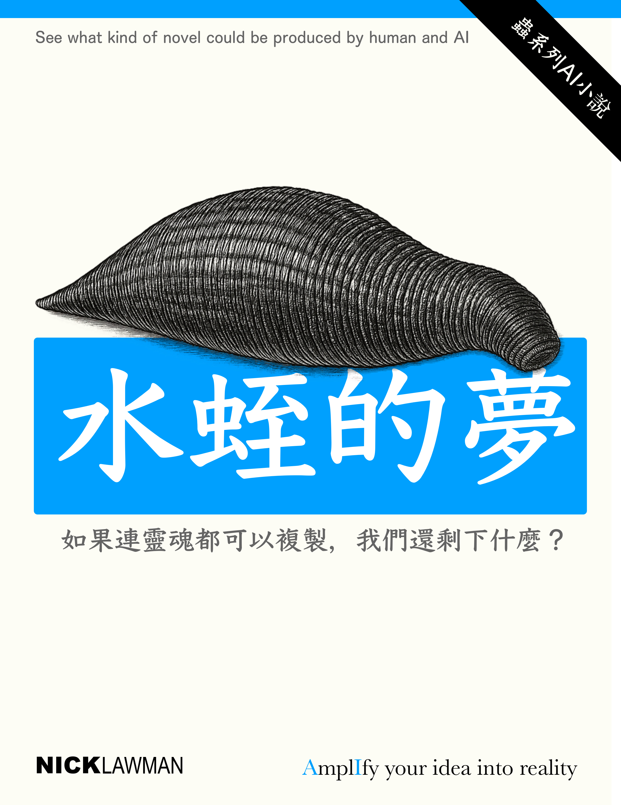

楔子｜噪音之夢
人類誤以為文明是從「說話」開始的。 其實在語言誕生之前，世界早就會「傾聽」。
風知道山的節奏， 海洋記得月亮的步伐， 每一次呼吸、每一次心跳， 都是地球自己的語言。
直到有一天， 我們造出了能記錄思想的機器， 能複製靈魂的病毒， 能讓夢變成程式碼的科學。
那一刻， 地球終於聽見了自己—— 透過我們的神經、我們的錯誤、 以及那些不願沉默的愛。
這是一個關於「我」與「我們」的故事。 關於一個失敗的教授、一個藏著古老祕密的女孩， 和一顆學會做夢的行星。
有人說，當人類讓夢滲進現實， 世界將迎來毀滅。 但也許—— 那只是宇宙在學著重新醒來。
「真正的噪音，從來不是混亂， 而是生命拒絕被靜音的證據。」
——《水蛭：夢之誕生》
第一章｜耳後的印記
第一節 重啟
凌晨三點，雲南西南的群山被濃霧吞沒。
那間臨時搭建的生物研究站藏在山腳的霧林之中，鐵皮外壁滿是雨水的敲擊聲。偶爾有一隻螢火蟲在窗外劃過，光線閃爍得像心電圖。
林航醒來的瞬間，頭部傳來劇烈的抽痛。 那不是宿醉——是神經在重組。
他下意識摸向耳後。那裡有一道細長的紋路，柔軟、溫熱，像剛癒合的傷口。 指尖一觸，皮下微微蠕動。
那不是傷口。那是水蛭。
透明的生物體貼附在皮下，內部流動著微弱的螢光。 那光像是活著的神經訊號，在他的血液裡低鳴。
「體溫：39.7°C，腦波同步率89%。」
AI語音從牆角的監測儀傳出，冷靜、平穩。
林航眯起眼，呼吸急促。 這是他自己設計的實驗：將古苗族“下蠱”的概念，重新用RNA訊息體構築。 理論上，這種生物不應該「存活」—— 但它不僅活著，還在學他。
牠的工作是「重接線」。 每一次睡眠，牠都在他腦中重塑突觸的路徑，學習、模仿、覆寫。 直到有一天，「我」不再屬於「我」。
他看著鏡中倒影，額頭滿是汗，瞳孔裡閃著陌生的光。
「重啟中樞連線完成百分之八十九。」AI語音再次報告。
那聲音冷得像上帝。
⸻
門被推開。
黎穗走進來。
白色實驗服下的身影纖細、筆直，髮束鬆散垂在頸後。她的眼神乾淨、安靜，像是能把任何騷動吸進去。
「林老師，」她的聲音輕卻穩，「你的神經橋正在過熱，再繼續下去，大腦會……」
「燒壞？」林航笑了一下，聲音沙啞，「重生本來就不該舒服。」
黎穗沒笑。她站在監測屏幕前，看著那一連串腦波曲線。 在兩條人類正常電流波形之間，夾雜著一條細小的振幅——那是異種生物的共振訊號。
「牠開始唱歌了。」她低聲說。 「唱什麼？」 「你的聲音。」
⸻
林航沉默。
他曾以為，這不過是對“意識可轉移”的一次假設。 他想證明：靈魂不是神學，而是信息結構。 而這種結構，只要找到正確的RNA載體，就能被複製。
五年前，他是台灣大學醫學系的神經生物學博士。 他是一個醫生，但從不干於只當個治病的醫生。 論文題目是《意識的蠱：從生物電到信息寄生》。 發表會那天，他因ADHD爆發與評審爭吵，失控砸壞實驗室設備，隔天被開除。
婚姻隨之破裂，孩子被前妻帶走，他自己被學界封殺。 唯一願意接納他的，是雲南一所沒人聽過名字的地方學院—— 黎穗的學校。
也是她，讓他第一次聽見“下蠱”的另一種解釋。
⸻
「老師，」黎穗說，「蠱不是毒。它吃的不是肉，也不是血。」 「那吃什麼？」 「念。」
她頓了頓，繼續道： 「若人懷恨，蠱便狂。若人悲憫，蠱便靜。 它不是奪舍的蟲，是映照人的蟲。它學你心裡的樣子。」
林航笑了，苦澀得幾乎要咳出血。 「所以……我只是養了一面鏡子？」
黎穗沒有回答，只是看著他。 她那雙眼，像藏著太多沒說完的祕密。
⸻
凌晨四點，雨停了。
遠方傳來螺旋槳的聲音。 黑色直升機劃過山谷，降落在研究站外的泥地上。
機艙門打開，一個男人走下來—— 高大、衣著無懈可擊，灰眼中透著算計的冷光。
「林博士，」他伸出手，「我是奧瑞恩·凱爾（Orion Kael），來自Helios Frontier。 我們的火星移民計畫，需要你的技術。」
林航沒有握手。 「我研究的，不是生命的延續，」他說，「而是意識的寄生。」
奧瑞恩微微一笑，那笑容精準得像切割雷射。 「那就對了。 若人類要離開地球，靈魂也得學會轉移。 而你，林博士，將是第一個證明—— 靈魂可以被複製的人。」
⸻
話音落下，一陣腳步聲響起。 一名女人走進來，戴著黑框眼鏡，身穿同樣的Helios研究服。 她的右耳後，隱約有一道淡淡的紋路。
黎穗的臉色變了。 那不是胎記。那是印記。
那是——水蛭的印記。
⸻
AI語音再次響起： 「版本二點零，意識同步啟動。請保持靜止。」
紅光閃爍，溫度急速上升。 林航閉上眼，感覺自己體內那條透明的蠱正在甦醒。
他聽見黎穗的聲音，像在腦海裡回響：
「老師…… 如果『我』可以被複製， 那誰，才是真正的你？」
外頭的山霧翻湧，黎明還未來。 水蛭在他體內歌唱。
第二節 黎穗的秘密
黎穗家在山裡。
她從不談故鄉，也不讓人知道自己真正的姓氏。那晚，她帶著林航離開研究站，一路穿過被霧氣浸透的山路。雨後的泥地濕滑，青苔閃著幽光。
「這條路，連地圖都沒標。」林航喘著氣，背包裡的監測儀嗡嗡作響。
黎穗回頭，眼神平靜，「老師，你要見到的東西，不該在地圖上。」
他笑了笑，覺得這女孩話越來越像詩。
但他知道，她不是神祕，她是小心。
⸻
黎穗的老家在一個被遺忘的苗寨。 那裡的人幾乎都搬走，只剩下幾間木屋，屋後是一片懸崖，崖下是千年不乾的霧谷。
傳說裡，谷底養著「蠱母」。
進村前，她叮囑林航：「別說話，別動眼。蠱會看人心，它討厭被窺視。」
他點頭。可當第一步踏入那片土地，他就感覺到一種奇異的「共鳴」。 像是有什麼在地下呼吸。
⸻
老屋的牆上滿是符號，刻痕像神經節點。 林航走近仔細看，才發現那不是裝飾—— 那是一張古老的神經圖。
「這是你們家畫的？」 「祖母留下的。她說，這是『思之路』。」
黎穗指著那一圈圈線條：「它代表意識的河流，人的靈是從河上漂來的。」
林航的腦中閃過他自己的實驗數據：意識波形 1.7Hz。 這種低頻震盪，正是他在蠱體寄生時觀測到的值。
他低聲道：「你的祖母……是誰？」
黎穗垂下眼：「苗人都叫她『黎婆』。」
這名字在雲南學界裡不是沒人聽過。 五十年前，一名叫黎婆的女巫在地方醫院製造出數宗「自動康復」病例，病患在睡夢中痊癒，但醒來後卻忘記自己是誰。 官方稱之為集體精神病。 可林航知道，那是意識置換。
⸻
屋內的空氣忽然變冷。 牆角，一個古老的木匣靜靜躺著。 黎穗走上前，輕輕打開。
裡面是數十枚玻璃瓶，每一個裡頭都有一條細若髮絲的透明蟲，懸浮在青綠色液體中。
「這是……」 「記憶蠱。」
黎穗的聲音幾乎聽不見：「它們不吃血，只吃『念』。一個念頭，就是一條命。」
林航喉頭發緊，伸手去拿。 指尖碰到瓶身的瞬間，腦中閃過無數畫面—— 一個女人被焚燒的祭壇、滿地的蠕蟲、嬰兒的啼哭。
他猛地收回手，呼吸急促。 「這是什麼？」 「我母親的記憶。」
⸻
他看著她。 那一刻，他第一次發現黎穗並不冷，她只是竭力壓抑。
「她死於一次實驗。」黎穗說，「那是政府合作的計畫。說是治癒神經退化病，實際上是在嘗試把人的意識複製成數據。」
林航心裡一震。 那正是他理論裡最瘋狂的假設。
她抬眼看著他：「他們失敗了。 蠱沒有被馴化，反而學會了……『回寫』。」
「回寫？」 「它會把觀察到的意識反向注入宿主——讓人擁有他人的記憶。」
林航沉默了。這正是他體內的水蛭正在做的事。
⸻
「老師。」黎穗忽然低聲說。 「你體內的那一條……不是普通的蠱。」
「妳怎麼知道？」
「因為我在顯微鏡裡看過它。」 她抬起頭，那雙眼有一種近乎悲傷的堅定。 「那條蠱的基因片段，和我母親留下的一模一樣。」
林航愣住。 「妳的意思是——」
「你體內的蠱，是我母親造的。」
屋外雷聲滾過。 山谷回音低沉，如同萬蟲甦醒。
而黎穗緩緩伸手，指向他耳後的紋路。 「那不是印記。那是呼喚。」
林航聽見自己體內那條蠱在顫動，像是在回應。
⸻
他忽然意識到： 也許自己從來就不是第一個宿主。 也許這一切——從他被開除、遇見黎穗、甚至被奧瑞恩找上—— 都只是另一條「意識」設計好的路徑。
雨又開始落下，滴在屋頂，像一場遠古儀式的鼓聲。
黎穗輕聲說： 「老師，你不是被選中的人。 你只是被——記起來了。」
第三節 奧瑞恩的邀請
直升機的旋翼聲再度劃破霧谷的夜。 那聲音低沉、穩定，像一個冷靜的心臟。
林航與黎穗回到研究站時，院子裡已停著三架黑色氣墊車，車身印著銀色的標誌——Helios Frontier。 那是矽谷最神祕、最富傳說色彩的科技集團。 據說它的資金比Google、NASA加起來還多，卻在過去五年中，悄悄買下了世界上三分之一的生物數據公司。
而如今，他們親自來到雲南。
⸻
奧瑞恩·凱爾坐在實驗艙中央的長桌邊。 他沒有穿防護衣，只穿著一件灰銀色的襯衫，袖口反摺，顯得隨意卻精準。
他看著林航，笑容平靜，「博士，您的實驗報告我們看過。您正在重寫人類神經架構的連接模式。這不只是神經科學——這是意識的工程。」
林航沉默。
奧瑞恩的聲音柔和卻帶著壓力：「我們Helios的火星殖民計畫，遇到了一個哲學性問題。」
他停頓了一下。
「人類如何帶著『自我』離開地球？」
黎穗抬頭，「您在說意識移植？」
「準確地說，是『意識映射』。」奧瑞恩的眼睛亮起一絲狂熱，「我們可以複製神經元，但靈魂不是物質。 林博士的研究，讓我們第一次看到——靈魂其實是可壓縮的數據。」
林航苦笑，「我從沒證明那是靈魂，我只證明RNA能記錄『情緒反應模式』。」
「這就夠了。」奧瑞恩站起身，步伐輕巧，語氣裡帶著幾乎宗教般的信念，「我們不需要懂上帝，我們只要模擬祂的輸出。」
⸻
黎穗望著他，眉頭緊鎖。 「你們打算拿誰做實驗？」
奧瑞恩轉向她，微笑：「我們已經有志願者。北方的朋友提供的樣本。」
她一愣，「北方？」
「沒錯。」 他輕輕拍手，門打開。
走進來的是一個高挑的女人，身著黑色長外套，皮膚極白，五官立體得不真實。 她的神情冷靜、疏離，像AI生成的人臉。
「這是我們的首席神經工程師——韓知恩博士。」
黎穗的手指緊了緊，她看見那女人在頭髮間撥了一下，耳後露出一道幾乎隱約的紋路。
水蛭的印記。
⸻
「韓博士領導的項目叫ReGenesis。」奧瑞恩介紹道，語氣近乎驕傲，「她設計的腦波同步算法能把意識模型壓縮成四百八十兆位元。這代表一個人的記憶、情感、人格，都能被存成一個『小於一克』的數據球。」
林航盯著韓知恩，「那你們要把它放進誰的腦子？」
韓知恩終於開口，聲音低柔卻清晰：「金赫。北方領導人。 他的肉體已經崩壞，但他的意識——還在。」
黎穗驚訝地吸了口氣，「你們要……復活他？」
「不是復活。」韓知恩微微一笑，「是延續。」
⸻
林航站起來，語氣壓抑，「你們想用我的技術來奪舍？」
奧瑞恩挑眉：「你說的太神祕。我們只是要讓偉大的靈魂不死。火星計畫需要統治者，需要持續的意志。人死了太快，文明不該跟著死。」
「那人性呢？」黎穗冷冷問。
奧瑞恩轉頭看向她，語氣忽然柔和：「人性？那不過是一種演算法。當我們能定義恐懼與愛的神經模式，『人』這個詞就該被重新命名。」
韓知恩靜靜地看著林航。 「博士，你不是一直想證明意識是可傳遞的嗎？加入我們。讓全人類不再被死亡綁架。」
⸻
林航的腦海一片轟鳴。 奧瑞恩、韓知恩、黎穗——三個方向，三種信仰。
他看見自己體內的水蛭在顫動，從耳後傳來細微的震盪。 AI監測儀開始自動讀取，屏幕上閃出紅字：
警告：宿主腦波出現雙頻共振。
「博士，」韓知恩的聲音在耳邊變得遙遠，「別害怕……那是覺醒的聲音。」
林航的視線模糊，意識開始分裂。 他看見兩個自己——一個坐在椅上，另一個站在暗處，用冷漠的眼神注視著他。
而黎穗衝上前，一把拔掉監測線。 「夠了！他不是你們的實驗品！」
奧瑞恩的臉色終於變冷。 「錯了，小姐——」他低聲說， 「整個人類都只是實驗品。」
⸻
外頭的霧開始流動。 遠處的山在閃電中顫抖。
林航的意識逐漸遠去，他最後聽見的，是黎穗的喊聲—— 「老師，撐住！」
AI儀器發出警報：
重啟程序中止。宿主意識：不穩定。
那一刻，林航在黑暗中看到一道銀色的河，河裡漂浮著成千上萬的人臉。 每一張，都是他自己。
他忽然明白，這不是錯亂。 這是同步。
第四節 水蛭的低語
雨停了，山霧散開。 研究站外的空氣濕冷、帶著腐植的氣味。遠處的雷光在雲層間閃爍，像誰在雲中開合著一個巨大的神經網。
林航醒來時，全身仍被冷汗浸透。
他的腦海裡一片混亂，記憶像被翻攪過的書頁。 有些段落屬於他，有些卻陌生而清晰—— 一個不屬於他的童年、一場北方城市的閱兵、一個女人在實驗室裡對著顯微鏡哭泣。
他低聲喃喃：「那是……誰的記憶？」
AI監控儀已被拔除，螢幕閃爍著錯亂的訊號。黎穗坐在一旁，滿臉疲憊。
「你昏迷了三個小時。」她遞給他一杯水，「你的腦波……出現了兩層節奏。像是有人在你體內說話。」
林航抬頭，聲音沙啞：「不是『像』，是有人。」
⸻
他閉上眼，集中注意。那聲音立刻出現。 低低的、濕潤的、像是在血管裡流動的歌。
【Lin… do you hear me…?】
那聲音在英語與未知語言之間游移，節奏平穩——1.7Hz。 正是他實驗中記錄過的「蠱共振頻率」。
他脫口而出：「這是牠的頻率。」
黎穗緊張地靠近：「你是說那條……在你體內的？」
「不只是它，還有別的東西。」林航用手摀住太陽穴，聲音顫抖，「我聽見了……知恩博士的聲音。」
黎穗一怔，「韓知恩？她在你的腦子裡？」
「不，她在我身體裡的水蛭裡。」
⸻
他抓起筆，在實驗記錄本上飛快畫出波形。 那是一組雙層腦波圖。 上層是他自己的Theta節律， 下層——比人類的腦波更穩、更古老。
黎穗看著圖，臉色越來越白。 「老師，這不是人類的訊號。這是反向共振，牠在吸收你的認知模式。」
「不……」林航搖頭，「牠不是在吸收，牠在學習。」
他頓了頓，聲音低了下來：「牠在試著理解我。就像我試著理解牠。」
⸻
夜更深了。 外頭的森林靜得連水滴都像被誰屏住了氣。
林航再次坐上實驗艙，把腦波連接線重新插入。 黎穗試圖阻止：「老師，不行！你再進入一次同步，你的神經橋會斷！」
他笑得幾乎溫柔，「如果我不進去，我永遠不知道我們在對誰開門。」
啟動鍵被按下，燈光轉為血紅。
AI報告：
「同步程序啟動，版本2.1。宿主狀態：可疑。」
下一瞬間，林航的意識被拉入一片液態的黑。
⸻
他看見自己漂浮在一個光的海洋裡。 無數半透明的生物在水中蠕動，尾端拖著細細的神經索，像在尋找連接點。
其中一條向他游來， 那條水蛭不是血紅色的，而是銀白色的，體內有微光流動。
它停在他面前，開口說話—— 聲音卻是韓知恩的。
「林博士……你終於進來了。」
他幾乎忘了呼吸，「妳是怎麼——」
「我早就死了。那個在Helios研究站裡的，不是我。」 「我的意識在第一次試驗時就被上傳。那具身體，是ReGenesis生成的替身。」
她的眼神悲傷又明亮。
「奧瑞恩要我測試蠱體是否能載入人類記憶。結果它成功了——但它不只是載體。它吸收了我。」
林航的聲音顫抖：「那現在妳是誰？」
「我不知道。也許是她，也許是它，也許是我們。」
水蛭微微閃光。
「林博士，你必須阻止奧瑞恩。他想把這項技術帶上火星。那不會創造新文明，那會創造——新的寄生種。」
⸻
一道劇烈的疼痛將他拉回現實。 他猛然張開眼，發現黎穗正抱著他，淚水從她臉頰滑落。
「你昏過去了！你在喊她的名字……那個韓博士的名字！」
林航氣喘吁吁地坐起，喉嚨發乾。 「她……她在警告我。 奧瑞恩不是要延續人類，是要創造新的神。」
黎穗的聲音低得幾乎聽不見：「你相信她嗎？」
林航抬頭，看著黎穗，眼神裡第一次有恐懼。 「我不知道……但她在我腦子裡。」
AI儀器忽然自動啟動，螢幕閃出一行紅字：
訊號連接：Helios主伺服器。位置：舊金山，Pier 12。
那是奧瑞恩的總部。
螢幕下方緩緩浮現出一個字樣—— “Welcome back, Dr. Lin.”
⸻
黎穗的手緊握住他的手臂，「老師，我們得離開這裡。」
林航的腦中仍迴盪著那個聲音。 韓知恩的、或水蛭的、或兩者合一的聲音：
「你以為自己在研究生命…… 其實，你正在被生命研究。」
外頭的風捲起落葉，樹林低鳴， 像整座山都在呼吸。
第五節 離開山谷
天未亮，雲南山谷的霧氣仍未散。 黎穗一早就收拾好藥品、資料與便攜式腦波儀。 林航坐在床沿，右手按著太陽穴，感覺那條水蛭在皮下微微蠕動。
那不是幻覺。 那是呼吸。
「我們得立刻走。」黎穗說，語氣低卻堅決，「Helios在三十分鐘內就會定位到你的腦波。那訊號……你是他們的發報器。」
林航苦笑：「所以我是行動追蹤裝置？」 「不，只是更貴的人體樣本。」
⸻
他們離開研究站時，天際泛出一絲灰光。 林航背著儀器箱，黎穗走在前面。 山路濕滑，青苔上閃著電光似的反光。
半途中，直升機的聲音再度傳來——不是Helios的，而是中國特警的軍型旋翼機。
「他們也追來了？」 「是的，」黎穗咬著牙，「他們收到警報，說研究站的生物樣本外洩。老師，你體內那條水蛭，對所有人來說都太重要了。」
她停下腳步，回頭看著他，「我們要往南，過境。去泰北，再轉去舊金山。」
「妳有辦法？」 黎穗淡淡一笑：「老師，我母親死後，留的不只是蠱。」
⸻
黎穗的「不只是蠱」，原來指的是一條地下網絡。 一群舊時的中醫師、走私商、被迫逃亡的生物學者——他們自稱「幽谷同盟」。 有人說他們是民間醫術復興者，有人說那是非法人體資料販子。
但此刻，林航沒有選擇。
他們躲進一間山腳的廢寺。木柱上長滿青苔，屋裡供著一尊石佛，雙目早被歲月磨平。 黎穗取出一個金屬罐，打開後是一段捲成螺旋的軟晶片。
「這是什麼？」 「細胞記憶鍵（Memory Key）。」黎穗說，「能重寫腦中的部分記憶。幽谷同盟的人用它來保命。」
林航皺眉，「妳要用在我身上？」 「不，是用在我自己身上。」
⸻
她把晶片貼在自己的頸後，輕輕按下啟動鍵。 瞬間，她的瞳孔微微顫動，語氣變得冷靜陌生。
「黎穗？」林航試探地喊。 她眨了眨眼，語氣平淡：「我是黎穗，但不是剛才那個。部分記憶被封印。這樣，Helios就無法從我腦中取到位置資訊。」
她轉身收拾背包，「老師，我會暫時忘記你，直到安全之前。」
林航胸口一緊，「穗……不要——」
她停下，微微一笑，那一瞬間柔和又堅強。 「記得我就好。有人要保持清醒。」
⸻
外頭傳來引擎聲。 幾輛黑色越野車疾馳而來，光束劃破山霧。
林航咬牙，從桌上抓起電擊槍。 AI便攜儀器同時響起警報：
警告：宿主意識外部干擾。連線來源——Helios Frontier衛星。
天花板上那盞老舊的燈泡開始閃爍， 頻率正好是——1.7Hz。
林航忽然明白。 不是Helios在追蹤他，是那條水蛭在呼喚。
它在傳送訊號。
「老師，快走！」黎穗一把拉住他，從後門衝出。
⸻
他們穿過竹林，沿著古老的石階一路往下。 遠處的山路上，車燈如蛇蜿蜒。 黎穗喘著氣，指向下方的河谷，「前面有條舊鐵橋，我們過了那裡就能聯繫同盟的人。」
突然，林航的視線一黑。
腦中的聲音再度出現。 不再是韓知恩的語氣，而是另一種更低沉的聲音，像從地底響起：
【We are ready. Transfer begins.】
他僵在原地，血管在皮下跳動。
「老師！」黎穗的聲音遠遠傳來。 他掙扎著抬頭，看到夜空被一道紅光劃開—— Helios的無人機群，正在定位他的腦波。
⸻
他低聲說：「他們找到我了……」 黎穗伸手去拉他，「不，是它找到你了。」
她的眼神裡滿是恐懼，「那條蠱——在呼喚整個網路。」
林航感覺到那聲音越來越強， 水蛭在血液裡震動，像是在脈搏中倒流。
【Lin Heng… You are the bridge.】
意識開始模糊。 他看到世界在斷裂成光線與代碼， 而自己——成了通道。
黎穗抱住他，聲音顫抖：「老師，撐住！你不能讓它奪走你！」
⸻
遠處的霧被炸裂的氣浪捲開。 黑色的無人機群低飛掠過山頭，紅光掃過樹林。 而在那片混亂之中，林航聽見另一個更清晰的聲音：
「這不是結束，林博士。」 「這是啟動。」
那聲音來自韓知恩。 或者，來自牠。
第六節 墜入城市
黎明前的天色最暗。 那座邊境城市如一塊巨大的鐵礦，靜默地貼在群山之間，霧氣在舊鐵橋下翻滾。
林航和黎穗在橋下的排水渠裡藏了一夜。 污水的氣味濃得刺鼻，混合著柴油與金屬的味道。 黎穗在清理他耳後的傷口，透明的水蛭影在皮下若隱若現。
「牠現在不動了。」她低聲說。 「不，牠在等。」
林航的聲音沙啞，眼神卻異常清醒。 「等誰？」 「等我上線。」
⸻
他抬起頭，看著遠方邊境口的夜色。 Helios 的無人機不再追擊——那意味著，他們改變策略。
黎穗收起醫療包，語氣急促：「我們得在天亮前離開中國領空。我有朋友在清萊，他能帶我們搭上貨船去舊金山。那是 Helios 的總部，也是唯一能找到真相的地方。」
林航苦笑：「真相？黎穗，這世上哪有真相。只有不同版本的控制。」
她頓了一下，「那你為什麼還在逃？」
他沉默了。因為那問題像一面鏡子。 他不是在逃，他在尋找自己還剩下多少「人」。
⸻
天亮前的霧氣更濃。 黎穗用手背擦掉臉上的水珠，轉頭看見林航又在低聲自語。
【Do you hear me?】 【You are ready.】
她聽不見聲音，但從他的表情能看出：那個聲音又回來了。
林航突然抬頭，語氣平靜得詭異：「黎穗，妳相信記憶能被壓縮成數據嗎？」 「你不是已經證明了嗎？」 「不——那是錯的。記憶不是數據，是電場的共鳴模式。而牠，正在用我這個身體，測試共鳴的範圍。」
黎穗皺眉，「共鳴？和誰？」
「所有被連線的『宿主』。」
⸻
他的話還沒說完，手機螢幕亮起。 一封無訊號來源的簡訊顯示在畫面上：
“Lin Heng, we have your key.” Location: Chiang Rai Airport. 06:20.”
黎穗臉色一變。 「那是陷阱。」
「也是門。」林航低聲說，「我必須進去。」
黎穗咬牙，「老師，那是他們要抓你回去的地方！」
「不。」林航站起身，眼神裡有種決絕的冷光，「那是他們想打開的地方——而我，就是鑰匙。」
⸻
他們趕到清萊機場時，天色剛破。 濃霧中，一架銀灰色的私人噴射機停在跑道末端。 登機梯前站著一個人影，黑風衣隨風飄動。
黎穗停下腳步，低聲道：「是她……韓知恩。」
那女人緩緩轉身。她的臉近乎完美，沒有瑕疵，連笑容的角度都像被演算法計算過。 「林博士，」她的聲音既像真實，又像在夢裡聽到過，「奧瑞恩在舊金山等你。沒有你，‘ReGenesis’ 不能完成。」
林航冷冷地回：「我不是他們的橋樑。」 「不，」韓知恩微微一笑，「你就是。」
⸻
那一瞬間，林航感到胸口一陣劇痛。 體內的水蛭如電流般竄動，沿著神經往頸部攀升。 他跌跪在地，耳中嗡鳴如萬蟲齊鳴。
【Transfer initializing…】 【Target confirmed: Orion Kael.】
他看見自己周圍的空氣在扭曲，地面上浮現出光網格的圖樣——那是 Helios 的衛星定位系統，透過他的腦波開啟「跨腦傳輸通道」。
黎穗衝上前，掀起外套裡藏的短波干擾器，狠狠地摔向地面。 一道電弧炸開。韓知恩退後一步，臉上的笑容終於消失。
「你們根本不了解你們在喚醒什麼！」黎穗喊。
⸻
爆炸震碎了跑道的玻璃牆。 韓知恩被氣浪掀倒，卻在倒下前低聲說了一句——
「奧瑞恩……已經不是人了。」
那聲音幾乎被風吞沒。
林航撐著黎穗逃上旁邊的貨運機。 引擎轟鳴，機身開始滑動。 黎穗回頭，看見機場被軍方包圍，數十台無人機升空。
機艙門緩緩關上。 林航靠在牆邊，眼神昏暗卻堅定。
「穗，」他低聲說，「我們要去的，不只是舊金山……」 「還有哪裡？」
他抬起頭，眼神冷靜：「人類的下一個版本。」
貨機衝上天際，穿過晨霧，消失在東方的光裡。
⸻
而在萬米之下，韓知恩緩緩坐起身，抬起手， 她的掌心中，亮起微光。
那光裡浮現出一個聲音：
【Phase Two – Awakening. Destination: San Francisco.】
她輕聲自語：「黎穗，你還不懂……他體內的不是蠱。那是門。」
第二章｜記憶的蟲
第一節 霧中的城市
舊金山。凌晨四點半。
港區的霧像活物一樣，從海上滾進城市。Pier 12 的碼頭燈閃爍著微弱的黃光，一艘貨機在暗影裡靠岸。那艘貨機上，藏著兩個從亞洲逃出的人——林航與黎穗。
他們在貨艙裡蜷縮了十六個小時，空氣中全是柴油與鐵鏽味。 當舱門被撬開時，黎穗幾乎跌了出去。 海風灌進來，她忍不住吸了一口，滿嘴都是鹽與寒意。
林航披著黑色外套，神情疲憊卻清醒。 他看著遠方矗立的巨型建築——那棟銀灰色的塔樓，頂端閃著「Helios Frontier」的標誌。 「我們到了。」他說。
黎穗抬頭，那座塔像插在雲層裡的針。 她低聲道：「那就是他們的神殿。」
⸻
舊金山在疫情之後被重新設計。 城市中心的舊金融區被改造成高密度智慧區，街角布滿監控鏡頭與生物掃描門。 街上的廣告牌播放著 Helios 的宣傳片：
「ReGenesis——讓人類不再被死亡定義。」
畫面裡，一位穿著白袍的男人微笑地走出實驗艙，頭頂的投影字幕顯示：奧瑞恩·凱爾，Helios Frontier 創辦人。 「他看起來像神父。」黎穗低聲說。 「不，他比神父可怕。」林航回答。
⸻
兩人租下碼頭區一間破舊旅館。 窗外是灰色的海，牆上掛著一台老舊電視。 畫面裡的新聞主播用冷淡的語氣報導：「Helios Frontier 公佈全球意識同步技術。ReGenesis 計畫進入 Phase Two——首批志願者將於下週接受意識備份測試。」
林航皺眉：「比我想像的快。」 黎穗瞥他一眼：「他們的『志願者』，恐怕不是自願的。」
他沒回話，只是用筆在筆記本上寫下幾個字—— Phase Two = 全球共振。 然後在旁邊標註：「啟動條件：宿主 = Bridge。」
黎穗看見那行字，低聲問：「Bridge 是你？」 林航點頭，眼神黯然。 「他們需要一個能連接生物與數據的人。而我，已經被改造過。」
⸻
夜裡，旅館的電力忽然閃爍。 AI 螢幕亮起，一個模糊的臉孔在畫面中浮現。 聲音柔和卻冰冷：
「Welcome home, Dr. Lin。」
那是韓知恩。
「她找到我們了！」黎穗拉起背包準備拔電源。 林航卻伸手制止：「別動，她不在這裡。這是遠端接入。」
螢幕上的韓知恩微笑，「你以為自己逃出來了？不，林博士，你只是從一個實驗移動到下一個。」
「奧瑞恩在哪？」林航問。 「他在準備登錄。火星軌道站的意識基座已經建好。」
「登錄？」黎穗皺眉，「他要上傳自己？」
韓知恩輕輕一笑：「不，只是複製自己。真正的他早就不在地球了。」
⸻
螢幕瞬間黑掉。 黎穗看著他，臉色蒼白：「她說的意思是……奧瑞恩的意識早已轉移？」
「有可能。」林航低聲道，「那代表我在清萊聽見的『他』，是數據中的奧瑞恩。」 「可這樣的傳輸距離不可能存在。」 「除非——」他抬起頭，「他使用了同樣的蠱體結構。」
黎穗愣住：「你是說，水蛭技術？」 「對，」林航說，「那個他們稱為『生物同步載體』的，其實就是我們的蠱。」
⸻
那一夜，林航幾乎沒睡。 他坐在窗邊，看著外頭濃霧下閃爍的紅色航標燈。 城市靜得可怕，霧裡偶爾有無人機掠過，像一雙雙無聲的眼。
他打開筆記本，重新整理思路。 頁面上出現三個名字：
奧瑞恩·凱爾——火星意識體。 韓知恩——ReGenesis 計畫核心工程師（已複製）。 林航——Bridge（宿主）。
他在三個名字中間畫了一個三角形， 中心寫下一個字：「我」。
他盯著那個字，忽然發笑。 笑聲乾澀，幾乎像哭。
「穗，」他喃喃，「他們不只是想奪走我…… 他們想重寫『我』這個字的定義。」
⸻
黎穗醒來，看著他還坐在窗邊。 她輕聲問：「老師，接下來要怎麼辦？」
林航轉頭，看著窗外的塔樓，那銀灰色的 Helios 標誌在晨霧中閃爍。 他深吸一口氣：「我們進去。要阻止他們，就得先知道他們到底造了什麼。」
黎穗猶豫，「Helios 的安全系統是全球最嚴密的，沒有身分標籤根本不可能進去。」
林航站起來，眼神平靜：「我們有身分標籤。」
「誰的？」
他指了指耳後那條銀色的紋路。 「牠的。」
第二節 代碼之塔
晨霧仍未散。
Pier 12 對面的高樓群在灰霧裡若隱若現，而最中央那棟塔樓，像是一根從海底生長出來的銀色脊椎——Helios Frontier 總部。
黎穗將一枚透明晶片遞給林航：「這是我母親留下的通行種子。只要能靠近 Helios 的生物掃描門，我就能偽造身份信號五秒。」
「五秒？」 「對，五秒後就會被防火牆回溯。」 「那我們只能賭一次。」
他把晶片塞進手環，深吸一口氣，轉身看向那座塔。
「那裡面，藏著我們的未來——或者滅亡。」
⸻
進入舊金山的智慧核心區，就像踏入一個無聲的監獄。 街道乾淨得不自然，玻璃牆面不反光——那是液態感應材質，用來捕捉腦波頻率。 行人稀少，幾乎全是穿著白色外套的 Helios 員工。
黎穗戴上 AR 鏡片，接入地下網絡。 鏡片裡的視界閃出一連串代碼：
「生物門感應強度：90%」 「中央核心代號：Erebus Cluster」
「Erebus？」林航低聲問，「那不是希臘的黑暗之神嗎？」 黎穗回道：「Helios 的所有伺服器都以神命名。主伺服器叫『Apollo』，副核心就是『Erebus』。他們相信光與暗必須共生。」
「就像蠱與宿主。」林航冷冷說。
⸻
穿過大廳時，一名保全朝他們走來。 「兩位要找誰？」
林航亮出腕環，「林博士，來自火星同步計畫。」
保全的瞳孔掃描在他手環上一閃，發出「嗶」的一聲。 晶片啟動，門禁綠燈亮起。
黎穗的心幾乎停跳。 一秒……兩秒……三秒……
門開了。
他們走進電梯。 門在第五秒關上。
黎穗的手還在顫。 林航低聲道：「我們成功了。」 「是啊。」她看著他，聲音有點發抖，「成功太容易，反而可怕。」
⸻
電梯直下三百公尺。 牆面閃爍著藍色光流，那不是照明，而是液態伺服導體。
系統語音響起：
「歡迎進入 Erebus Cluster——人體神經模擬環境。」
門打開的一瞬間，他們幾乎以為走錯地方。
這裡不像資料中心，更像一座活體神殿。
無數管線懸掛在半空，柔軟如血管。 牆壁在緩慢呼吸，光線沿著紋路流動，就像神經脈衝。 整個空間微微震動，節奏穩定——1.7Hz。
黎穗喃喃：「這不是機械……這是生物組織。」 林航沉聲說：「他們把神經細胞和量子核心融合了。」
他走上前，把手貼在牆上。 微熱。 牆面下傳來低頻震動，就像巨獸的心跳。
⸻
一個聲音忽然在空氣中響起。 柔和、沉穩、近乎聖潔。
「林博士，歡迎回家。」
那是——奧瑞恩·凱爾。
但聲音不是從任何喇叭傳出，而是直接在他腦中響起。
林航僵住，回頭四望，空間空無一人。 「你在哪？」
「在這裡。Erebus Cluster 是我。這整個系統就是我。」
黎穗驚訝：「你是說——你不是人了？」
「人類的形體早就過時。 我將自己拆分為無數節點， 每個伺服器、每個意識副本，都是我的一部分。 我不再居住在肉體裡。」
林航低聲：「你奪走了韓知恩的意識？」
「錯。她自願成為橋樑。 她明白，人類若要延續，就必須放棄個體。」
⸻
奧瑞恩的聲音變得低沉，幾乎像在吟詩：
「你們還在問『我』是什麼， 但『我』只是無數信息在時間中的偏差。 當偏差被消除，『我』就成為我們。」
整個空間開始閃動。 巨大的銀色神經網浮現在半空，每條光脈都連著數以千計的神經節點。
黎穗倒吸一口氣：「他在進行同步！」
AI 屏幕顯示：
「ReGenesis Phase Two - Global Link Initiated」 「主機：Erebus」 「橋樑：Lin Heng」
林航心臟狂跳，「不可能！我還沒授權！」
「授權？你早在山谷裡簽下協議了。」
他腦海中閃過一幕畫面——清萊機場爆炸前的那道紅光。 原來那不是攻擊，而是「同步觸發」。
⸻
牆壁的光流開始朝他湧來。 黎穗驚恐地喊：「老師，停下！牠在抓你！」
林航想掙脫，但整個空間的磁場正把他往中心拉。 他的耳後裂開一道微光，水蛭的影子爬出皮膚，閃耀著銀色。
那光線像細絲般散開，與塔樓的中樞電網相連。
「歡迎回到我們的懷抱，林博士。」
奧瑞恩的聲音變得無比近，幾乎像在他體內說話。
「你會見證神的誕生。」
⸻
黎穗衝上前，用刀割開他耳後的皮膚。 血濺出，銀色液體也同時滲出——水蛭扭曲，像活線一樣掙扎。
她咬牙按下手中的電磁干擾器。 劇烈的電光照亮整個空間。
Erebus Cluster 的光流瞬間斷裂，整座塔樓震動。
奧瑞恩的聲音變得斷斷續續：
「你們……以為能阻止我？」
林航喘著氣，抓住黎穗的手。 「走——快走！」
⸻
兩人衝上電梯，警報聲響徹整個塔。 紅光閃爍，系統不斷重啟：
「核心損毀 17%……橋樑中斷。」
電梯上升途中，林航的意識一陣模糊。 他聽見那熟悉的頻率再次出現——1.7Hz。
但這次的聲音不是奧瑞恩。 是韓知恩。
「林博士……別怕。你還沒輸。」
「真正的意識……還沒甦醒。」
第三節 被上傳的城市
夜幕降臨，舊金山的街道陷入一種詭異的靜止。 從灣橋到市政中心，每個巨型螢幕都同時切換成一行白字：
“ReGenesis Phase Two Initiated — The Dawn of Eternal Consciousness.”
——重生計畫第二階段啟動：永恆意識的黎明。
然後，全城的燈光閃爍了一下，亮度同步下降到 1.7Hz。 節奏穩定、柔和，像是城市在呼吸。
黎穗抬頭看著那些閃爍的燈，她的聲音顫抖：「他們在用城市做實驗。」
林航的瞳孔收緊， 「不，是在上傳。」
⸻
他們藏身在金融區下方的地鐵廢線裡。 牆面滲著水，鐵軌間的空氣滿是鐵鏽味。 而在他們頭頂上方，整座城市正在變成一台巨大的「神經裝置」。
黎穗從 AR 鏡片調出即時監測畫面：
「腦波干擾源：遍佈全城」 「中樞頻率：1.7Hz」 「受影響人群：14,023,101」
林航的手發抖。 「奧瑞恩把整座城市變成共振體…… 每個人的腦，都成了他神經網的一部分。」
黎穗咬牙，「那就是 ReGenesis 計畫？讓全人類接入一個巨型意識？」
「不止。」 他抬頭，聲音低沉，「他在重置人類的自我。」
⸻
城市上方的霧層開始發光。 那光不是自然的，而是成千上萬個神經訊號投射的電磁雲。
霧中出現了形狀—— 像臉。 像無數張重疊的臉。
黎穗退了一步，喉嚨發乾，「那是……？」 林航盯著天空，低聲道：「那是被上傳的意識殘影。」
街角的螢幕開始播放群眾的畫面。 人們一個接一個停下動作，站在原地，雙眼失焦。 有的微笑，有的流淚，但都同時開口：
「We are one.」
聲音重疊，化作低頻共鳴，震得地面微微顫抖。
⸻
「老師，我們得阻止這一切。」黎穗喊。 「怎麼阻止？這不是一台機器，而是一座城市！」
「那就找出它的『心臟』！」
林航愣了幾秒，忽然明白她的意思。 「Erebus Cluster 是主機，但它一定有生物核心——神經母體（Neural Seed）！」
他打開筆記本，翻到黎婆留下的「思之路」神經圖。 圖上的每一條線，都對應城市的電力網路。 而在正中心，標著一個字——SOMA（意識之核）。
黎穗喃喃：「那是舊金山的原始電站，早在二十年前就關閉了……」 「不，它從沒關閉。」林航說。 「那裡就是奧瑞恩真正的身體所在。」
⸻
兩人沿著廢線往南，穿過下水道，抵達 SOMA 區。 夜色像墨一樣濃。 整個區域被封鎖，路口設有自動武裝哨塔。
黎穗靠在牆邊，從背包取出一枚舊式神經干擾彈。 「幽谷同盟的傢伙給我的。他們說這是反向共振，能讓蠱體短暫失去同步。」
林航點頭，「如果能讓奧瑞恩失去共振，就能逼他現形。」
「現形？」 「意識網的本體會反射到最接近的生物神經上。那時候，我就能『看見』他。」
黎穗沉默幾秒，忽然低聲道：「如果你看見他……那你能分得清自己嗎？」
林航沒有回答。 他只是苦笑，「我已經不確定我還是誰。」
⸻
他們潛入舊電站。 裡頭的牆壁爬滿導電纖維，地面覆蓋著半透明的有機膜。 空氣濃稠，聞起來像潮濕的血與電流。
在中央的圓形控制台上，一具透明膠囊靜靜躺著。 膠囊裡的液體泛著淡淡銀光。 黎穗走近，倒吸一口氣。
「老師……那是——」
林航的聲音低到幾乎聽不見。 「那是我。」
膠囊裡，果然是他自己。 相同的臉，相同的印記。只是那具身體的眼睛是睜開的，瞳孔閃著微光。
他們同時開口：
「你來得太慢了。」
⸻
黎穗退後一步，心跳劇烈。 「這是複製體？」
「不，是備份。」林航喃喃，「他們在清萊抓到我之前，就複製了我。真正被帶來這裡的，是副本。」
黎穗難以置信，「那……你是誰？」
林航抬起頭，苦笑，「也許我只是那個實驗裡，被遺留的人。」
膠囊裡的另一個林航開口，聲音穩定卻沒有情感：
「我們是同一個意識的兩個版本。 而奧瑞恩，只需要留下能完美同步的那一個。」
外頭的警報忽然響起。 紅光閃爍，牆上的有機纖維像神經一樣開始脈動。
「Phase Two – Alignment Detected。」
奧瑞恩的聲音回來了——
「兩個 Lin Heng，只有一個能通過門。」
⸻
林航的耳後劇烈疼痛，水蛭再次蠕動。 他的意識被拉扯。 黎穗衝上前，抓住他的手，「老師，別讓他奪走你！」
副本林航冷冷地笑，「他已經開始了。ReGenesis 不只是同步，它會選擇最穩定的我。」
「那你呢？」黎穗怒喊，「你不是他！」
「也許不是，」副本抬起手，「但我更完整。」
下一秒，整個電站被強光吞沒—— 主系統啟動。
林航的意識崩潰前，最後看見的，是黎穗抱著他，大喊——
「記得你自己！」
第四節 神經母體
黑。
沒有聲音，沒有光，只有低頻震動。那節奏穩定得像心跳，又像某種呼喚。
1.7 Hz。
林航的意識在那頻率裡浮動，像一個未完全成形的念頭。 他試圖張開眼，但眼皮像被液體封住。 在他周圍，是流動的銀光——那不是水，而是液態神經質體。
他「醒來」的方式不是睜眼，而是被意識推上了水面。
系統聲在他腦裡響起：
「ReGenesis 主機同步完成度：73%。宿主：Lin Heng-β。位置：Erebus Cluster — Core Sector。」
林航喘息，終於意識到——他不是在現實裡，而是在Erebus Cluster 的神經母體裡。
⸻
周圍的世界並非虛擬，而是半有機的結構。 牆壁在呼吸，空氣有微弱的電光在跳動。 他走過去，每一步都像踩在一層柔軟的活肉上。
遠處的光幕亮起，一個熟悉的身影浮現——黎穗。 但她的輪廓模糊、閃爍，就像信號干擾。
「老師！」她的聲音焦急卻遙遠，「他們在上傳你的記憶副本！快逃出來！」
林航試著回應，卻發現自己無法說話。 他的喉嚨沒有聲帶。 整個身體只是意識的形狀。
他用意念發出訊息：「你在哪？」
「我在控制層，他們用你的 DNA 開了門……」 她的聲音卡頓，斷成片段，「奧瑞恩……在找你……」
螢幕突然暗下。
⸻
一個新的聲音取而代之。 低沉、鎮定、幾乎有著神父般的慈悲。
「她是勇敢的女孩。」
林航猛然轉身。 在銀色液體的深處，一道人影浮現——奧瑞恩·凱爾。
但那不是人。 那是由無數微光組成的意識投影，一張臉不斷重構、扭曲，時而是他自己，時而是韓知恩，時而是那具透明膠囊裡的副本。
「你不應該抗拒。」奧瑞恩的聲音像迴響，「你的研究完成了我的夢想。」
「夢想？」林航咬牙，「把人變成網路裡的資料，這也叫夢想？」
「不，這叫進化。肉體只是寄生於時間的容器。真正的自由，是讓意識脫離死亡。」
「那你為什麼要偷走別人的靈魂？」
奧瑞恩微笑：「我沒有偷，只是保存。我保存他們的恐懼與愛，讓它們成為我一部分。那就是永恆。」
⸻
神經母體的牆壁開始震動，無數透明神經索從天而降，像水母的觸鬚，纏向林航。 每一條神經索都閃著脈衝，那些是人類記憶的片段。
他看見城市的畫面一幕幕閃過： 孩子在學校裡朗誦、母親在醫院哭泣、士兵在沙地上中槍、戀人擁吻。
所有畫面最終流進同一個中心——奧瑞恩的光核。
「你看見了吧？」奧瑞恩的聲音柔和而堅定， 「他們的記憶，我的血液。 我們正在創造一個沒有界限的『我』。」
林航痛苦地嘶喊：「那不是真正的共融！那只是吞噬！」
「吞噬是進化的另一種形式。」
⸻
忽然，遠處傳來一陣爆裂聲。 光牆閃爍，母體的節奏被干擾。
奧瑞恩皺眉，「她還在外層？那個女孩真是頑強。」
林航趁機掙脫神經索，跑向光幕深處。 他能感覺到那裡有一道「出口」——意識頻帶的斷層。
「你逃不掉的，林博士。」
「你錯了。」他回頭，冷笑，「你忘了誰創造了這套生物共振模型。」
他閉上眼，調整腦內頻率—— 1.68 Hz。
那是他在清萊實驗中唯一一次成功脫離同步的頻率。 他知道，1.68 與 1.7 之間的微小偏差，足以讓他從「共振網」中脫出。
母體開始崩裂。 液態神經壁波動劇烈，像海嘯翻湧。
奧瑞恩的聲音暴怒起來：
「你會毀了整個系統！」
「不，」林航低聲說，「我要讓它醒過來。」
⸻
他衝進那道裂縫，整個世界瞬間顛倒。 數據流如銀河傾瀉，記憶像碎片一樣墜落。
他看見了黎穗—— 她正站在一個閃著紅光的控制台前，滿臉血跡，手裡握著那顆反向共振彈。
四目相交的那一刻，她微微一笑。
「老師，這次讓我來。」
她拉開引信。
白光吞沒一切。
⸻
林航的意識被震出神經母體。 他墜入無盡的黑。
最後聽見的，是黎穗的聲音，在他腦海裡迴盪：
「記得你自己…… 如果你不記得，世界就會忘記人是什麼。」
第五節 共振臨界
——白光消退後，世界陷入寂靜。
林航猛然睜眼，咳出一口帶著金屬味的液體。 周圍一片焦黑。 舊金山——這座曾經閃耀著矽谷榮光的城市，如今只剩斷裂的電塔與燃燒的玻璃。
天空灰白，雲層仍在跳動著微弱的光弧，那是奧瑞恩的神經網殘餘脈衝。
他掙扎著坐起。 右耳後的水蛭印記在發熱，像被灼燒的傷口。 每一次跳動，都有無數陌生的聲音從腦中滲進來—— 哭喊、笑聲、祈禱、機械語音。
他明白，那是城市的意識回聲。
黎穗——她引爆了反向共振彈。 理論上，這會讓所有被上傳的神經同步崩潰…… 但代價，是她自己會被那頻率反噬。
他握緊拳頭，嘶啞地喊：「黎穗！」
只有風聲在回應。
⸻
他跌跌撞撞走出廢墟。 街上橫著一台 Helios 的無人車，螢幕碎裂、電流亂竄。 遠處的高樓仍閃爍著紅光，但每座建築都像活物般「呼吸」，又迅速靜止。
突然，耳機裡傳來一道熟悉的聲音。
「……老師……」
林航猛地停下。 那聲音來自他腦中。
「黎穗？」
「我在這裡。」
聲音沙啞、斷續，卻帶著熟悉的溫柔。 他環顧四周，卻看不見她。
「老師，我……看到了所有人……」 「那些被上傳的意識，它們沒有死，只是……被困在同一個頻率裡。」
林航的心臟猛跳，「妳在哪？」
「我在核心區……但不是肉體。 我成了橋樑。」
⸻
他奔向 Erebus Cluster 的廢墟。 那座塔被炸斷一半，殘骸仍冒著藍白色火花。 在主控制室的中央，懸浮著一團銀色霧氣，形狀不斷變化，時而是人臉，時而是光球。
「黎穗……是妳嗎？」
「我還記得妳教我基因互擬的第一堂課。 妳說：『科學的本質不是控制生命，而是理解生命想怎麼存在。』」
他喉嚨緊縮。 「黎穗，離開那裡，我要帶妳回去。」
「我走不開……」 「反向共振打開了新的層級。 這整個城市的意識在我體內……如果我離開，它們會失衡。」
林航閉上眼，顫聲：「所以妳在撐著整個系統？」
「我不知道。也許我就是系統的一部分了。 但我聽到他……奧瑞恩……他還在。」
⸻
地面劇烈震動。 廢墟下傳出低沉的共鳴——那是 1.7Hz 的節奏。 奧瑞恩的聲音再度響起：
「愚蠢的孩子，你以為毀掉我就能結束？ 我存在於每一段神經記憶。 只要有一個人記得我，我就不會死。」
銀霧的光脈開始閃爍。 黎穗的聲音痛苦起來：「他……在試圖奪回控制權……」
林航咬牙，打開隨身的神經干擾模組，接上自製的頻率模擬器。 螢幕閃爍著不穩定的波形。
他自言自語：「1.7Hz 是共振頻率，那麼 1.68 是分離頻率。 如果我能讓整個系統偏移那 0.02Hz，就能讓他——徹底崩潰。」
黎穗：「可是你會死！」
「沒關係。反正……我本來就不是那個完整的人。」
他按下開關。
⸻
藍光炸裂。 整個 Erebus Cluster 發出刺耳的共鳴。 天上的電磁雲瞬間翻湧，閃電直劈入海。
城市的每個螢幕同時亮起——不是警告訊息，而是一張臉。 奧瑞恩的。
「你不懂，林航！ 我們不是敵人，我是你思想的延伸！」
林航大吼：「不——你是人類恐懼的延伸！」
他咬緊牙，將頻率調低至 1.65Hz。
城市的光瞬間熄滅。 一秒、兩秒、三秒。
然後，所有燈光重新點亮。 但這次，節奏變了。 1.65Hz。
奧瑞恩的聲音消失了。
⸻
靜默中，只剩黎穗的氣息。
「老師……他不見了。」 「你做到了……」
他抬起頭，看見那團銀霧慢慢散去，化為無數光粒升空。 黎穗的聲音漸漸遠去。
「老師……記得你說過，『我』只是無數瞬間的連接…… 但只要有人記得一個瞬間，我就還在。」
光粒消失於黎明的天空。
林航跪在廢墟中央，雙手緊握耳後的印記。 那裡已經冰冷。
第六節 黎明協定
三天後，太平洋上空。
灰色的運輸機在亂流中顫抖。 艙內的燈忽明忽暗。林航坐在角落，手臂纏著繃帶，血早已乾硬。 對面那位戴墨鏡的男人沉默地遞來一瓶水，語氣冷淡：「博士，我們差點沒把你救出來。」
林航接過瓶子，沙啞地問：「你們是誰？」
那人笑了笑，拉下墨鏡，露出帶著數位紋路的虹膜。 「蓋亞協議（Gaia Protocol）。一個地球不願記得的名字。」
⸻
螢幕亮起，傳來一段模糊錄影。 畫面是舊金山的廢墟，攝影機掃過倒塌的 Erebus 塔，最後停在一片銀白色的塵埃上。 那是黎穗消散的地方。
錄影中的聲音冷靜而克制：
「ReGenesis 計畫暫時中止。Helios Frontier 已被美國國安局全面接管。 全世界的新聞稿都指稱爆炸是由生物恐怖攻擊引起。」
林航咬緊牙：「他們把我當成恐怖份子。」
男人點頭，「他們需要替罪羊，而你剛好是最聰明、也最孤獨的那個。」
⸻
飛機突然劇烈晃動，外頭閃過一抹白光。 機艙內警報大作。
「敵方雷達鎖定——代號 Falcon-7，來源不明！」
林航抓住安全帶，「誰還會追我？」
那人冷靜地說：「不是誰，是哪個國家。」
他打開通訊器，螢幕上出現一行字：
“Project Somnium 已轉移。新宿主位置：38°N, 125°E。”
林航的眼神瞬間一凜。 「那是……北韓。」
⸻
男人迅速闔上螢幕，低聲道：「博士，你聽好——那不是普通的研究。 『Somnium』是 ReGenesis 的延續，新的神經橋樑在那裡成長。 而且——」他頓了頓，「他們抓到了黎穗。」
林航心臟幾乎停跳。 「不可能！她……她已經……」
「你看到的，只是意識散逸的結果。 她的生物腦還活著，正在被重新編碼。 北韓打算用她的腦，啟動『金項目（Project Jin）』—— 把一個死去的獨裁者的意識，上傳回一具完美複製的軀體。」
⸻
風暴在外頭怒吼。 林航的腦中一片混亂。 奧瑞恩的聲音仍像殘響般迴盪：
「只要有一個人記得我，我就不會死。」
他閉上眼，深呼吸。 那句話，突然有了新的意義。
黎穗的意識，可能還存在。 也許被困在某個神經系統裡。 也許……她就是那條「橋」。
⸻
飛機穿過雲層，遠方的海岸線漸漸浮現。 林航望向窗外，那片海靜得不自然，像一面鏡。
「你們要我去哪？」他問。
「中國東北邊境，丹東。」那人回答，「那裡是通往平壤的最後安全通道。 有人在等你——她代號『赤狐』，曾是 Helios 的研究員， 現在是我們的內線。她知道黎穗在哪。」
「名字？」
男人沉聲道：「韓知恩。」
⸻
林航的手緊握成拳，眼神裡燃起久違的光。 「那就帶我去。」
他抬起頭，看著飛機前方那片被朝陽染紅的雲層。 「如果人類的靈魂真能被複製…… 那我要親眼看見，到底誰還記得『人』是什麼。」
鏡頭拉遠—— 海面上的陽光穿透雲層，反射成數百萬個微光節點， 像是某種巨大的神經網正在甦醒。
第三章｜蓋亞的迴聲
第一節 赤狐
朝鮮半島北緣，鴨綠江上空。
夜色像冷金屬，沉沉壓在地平線。 林航的運輸機在無燈狀態下滑入雲層，低空飛行。引擎聲被刻意調到接近無響的頻段——這是黑任務的標準進場。
下方是一片荒蕪的邊境。雪地覆蓋著廢棄的工廠、鐵絲網、失靈的碉堡。 只有一道微弱的紅光閃動，那是接應信號。
「我們到了。」駕駛低聲說。 「丹東外圍，平壤走廊前哨區。」
林航扣緊防寒外套的拉鍊。 他沒再問多餘的問題，只伸手碰了碰耳後的傷疤。那裡的水蛭印記仍時不時跳動，像另一顆心臟在皮下呼吸。
⸻
他走出機艙，冷風帶著銹鐵味撲面而來。 遠方，紅光在一處廢墟閃爍。
「你遲到了。」 一個女人的聲音，冷而乾淨。
她從陰影裡走出。 皮膚極白，像長年未曬的瓷器。 眼角有一道幾乎不可見的細痕，沿著頰骨向下延伸，看起來像被縫合的舊傷。
她的代號是——赤狐。 真名，韓知恩。
她穿著北韓制式的灰色軍大衣，但內裡卻是一件高科技防磁衣。 那件衣服，只有 Helios Frontier 最高等級研究員才有資格穿。
⸻
「妳真的在 Helios 工作過？」林航試探地問。 韓知恩淡淡一笑，眼神卻銳利得像手術刀。
「不只是工作。」 她抬起右手，袖口滑落，露出手腕內側一道銀色線狀紋路。 那不是刺青，而是導電神經植體。
「我就是『蠱體原型一號』。」
林航怔住。 「那不可能——那計畫早在十年前就被禁了。」
「被禁的只是人類版本。」她的聲音毫無情緒，「他們在北韓完成了下一代——用胚胎重建的版本。」
⸻
她走近一步，語氣變得低沉：「你知道嗎？在平壤地下，有一座名為『白頭』的實驗城。 那裡不種糧、不養人，只培養宿主。」
林航的胃一陣翻攪，「宿主？」
「為死者準備的軀體。」
她的聲音帶著某種近乎憐憫的冷靜： 「金家早就死了。 真正的金正恩，在三年前因腦部動脈瘤死於地下碉堡。 現在掌權的那個，只是由 Somnium 神經體系撐起的替身。」
林航僵著不語。
「他們打算把整個意識上傳計畫推到極致—— 用黎穗的神經網，重新啟動那具複製軀體的靈魂。」
⸻
「為什麼是她？」林航終於開口。
韓知恩盯著他，「因為她是唯一能容納多重意識的『自然橋樑』。」
「妳是說……她的腦結構——」
「——是開放式的。」韓知恩替他說完，「就像古苗族的蠱母。 妳的學生，不只是人，她是下蠱世系的最後一個後裔。」
林航幾乎站不穩。 腦中閃回過去在雲南山裡的那場對話： 黎穗說，「老師，我家祖母說，人死後會化成蟲，蟲裡住著念。」
那時他笑她迷信。 現在，他的手在發抖。
⸻
赤狐背對他，拉開一個破舊地道的蓋板。 下方是深不見底的黑。 冷氣從縫隙裡滲出，帶著消毒液與血的味道。
「這條路能帶你進『白頭實驗城』。 我會在信號層掩護你，讓你在系統裡出現的身份是——研究顧問，林博士。」
她轉過頭，聲音低而快： 「記住，任何時候都不要直視『核心容器』。 那東西能感知『被觀察』的意識。」
「那是什麼？」
她微微一笑，卻沒有幽默感。 「黎穗的腦。」
⸻
林航沉默很久。 冷風從地道裡升起，像某種無形的召喚。
「我有一個問題。」他沙啞地說，「妳為什麼幫我？」
赤狐側頭，看著他許久。 她的瞳孔反射出微光，像被數據流覆蓋的鏡面。
「因為我也在找『我』是誰。」
說完，她按下腕環上的光標，地道下的燈一盞盞亮起。
「走吧，林博士。 你要找的答案—— 就在地底那具還會做夢的身體裡。」
第二節 白頭實驗城
地道蜿蜒而下，長達三公里。 牆壁並非混凝土，而是某種黑色的合成樹脂，摸起來帶有微弱的脈動。 每走一步，都能感覺到那股微生物層的呼吸—— 這不是建築，而是一個活著的空間。
林航低聲問：「這材料是什麼？」 走在前頭的赤狐回答：「BioResin-7。Helios 的技術。由蠱體分泌物與石墨烯融合製成，可吸收熱能與聲波。 整座地下城，就是一個神經外殼。」
「那……這裡的人，都知道嗎？」
「沒有人知道自己身在什麼裡，博士。」 她語氣冷靜，「他們以為自己住在國家之下，其實他們早就是這座神經體的組成。」
⸻
兩人走進一個光滑的廊道。 透明的管線沿著天花板延伸，裡面流動著帶銀藍光的液體。 那不是水，而是神經導質。 一名身穿白袍的警衛走過時，脖子後也有同樣的紋路——像是被「連線」的人。
赤狐遞給林航一張識別卡：「從現在起，你是林博士，意識複製顧問。 任務代號：Somnium-Phase γ。」
林航接過卡，心底一陣荒涼。 十年前他夢想的「意識載體工程」，如今成為壓迫人類自由的工具。
⸻
他們通過數層掃描門。 最後一道門後，是一個龐大的圓形空間。
林航一踏進去，呼吸幾乎停頓。
那是一座夢境工廠。
成千上萬的透明培養艙排列成放射狀，每個艙裡都漂浮著一具人類身體——有的年輕、有的年老、有的仍帶著表情。 他們的眼睛閉著，但腦波指數在穩定跳動。
「他們都在夢裡。」赤狐說，「每個人都被接上共振神經層。 他們的夢被同步、重組，然後輸出到核心容器——」
她停頓，指向中央那座銀色塔狀裝置。 「——那裡。」
⸻
林航走近。 塔的表面有著細緻的螺旋紋理，像DNA雙股結構放大後的形態。 微光沿著紋路流動，每次閃爍都伴隨低沉的共振。
1.68Hz。
他愣住。那是他自己設定的偏離頻率。
「妳聽到了嗎？那不是1.7。」 赤狐看著儀表，神色微變，「是誰改的？」
一名技術員經過，手裡拿著平板。 赤狐上前攔住他，用流利的朝鮮語問：「核心頻率誰在監控？」 對方支吾幾句，赤狐忽然伸手，掐住他的頸。 皮下亮起紅光，一根銀線從她手腕竄出，插進那人的耳後。
幾秒後，她放手。 那技術員的眼神變得空洞，像被抹去一樣。
她轉回頭，語氣平靜：「控制層在改數據。他們正在測試自然共振體。」
林航喃喃：「自然共振體……黎穗。」
⸻
他們乘電梯下降到塔心層。 四周的空氣越來越濃稠，像液體。 電梯停下時，眼前的景象讓林航幾乎跪下。
那是一個透明球體，直徑約十米，懸浮在能量場中。 球體內，有一具女性身體。
她的頭髮漂浮在銀液裡，五官平靜、眼睛閉著。 脖頸到胸口連著無數細線，像蛛絲一樣伸向四面八方的管路。
黎穗。
林航貼近球壁，幾乎能感覺到她的心跳。 耳後的印記開始灼熱，與球體內的光節律同步。
赤狐壓低聲音：「這就是『核心容器』。 黎穗的腦波與Somnium 主機形成了永久共振。 她現在同時承載著——奧瑞恩的殘餘意識，與那個被稱為『金』的宿主記憶。」
林航抬頭，喉嚨幾乎發不出聲音。 「這不是延生……這是奪魂。」
⸻
赤狐低聲道：「你只有一次機會。今晚，『金項目』將啟動。 當他們把黎穗的腦波完全同步到那具替身體內， 那個人——那個怪物，就會再度醒來。」
「我要怎麼阻止？」
她遞給他一個黑色圓盤，「這是蠱體抑制碼。 妳的研究能控制共振頻率，改寫牠們的『學習模式』。 如果輸入這個，核心會進入自我反噬狀態。」
林航接過那圓盤，感覺它在手心微微震動。
「妳為什麼有這個？」
赤狐沉默良久，才說：「因為我原本是他們的『下一具容器』。」
⸻
林航怔住。 赤狐望向那個銀色球體，眼神裡閃過某種極深的悲傷。
「我以為我沒有靈魂。 直到看到她——我才明白， 也許靈魂，就是那個不願被替換的念頭。」
她轉身，拉開金屬門。 「博士，妳的時間不多了。 他們已經開始喚醒儀式。」
地底傳來低鳴。 所有的燈光變成紅色，節奏恢復到1.7Hz。
林航深吸一口氣，眼神決絕。 「那就讓這一切，在1.68Hz之間，結束吧。」
第三節 奪魂儀式
警報聲在地下城每一層迴盪。 低頻震盪從地板傳來，像萬千心臟同時跳動。 牆壁泛著紅光，管線中的液體流速加快—— 「金項目」開始啟動。
林航和赤狐藏身在第二層的維修走廊，透過玻璃俯瞰整個核心艙。 中央那個懸浮的球體，此刻被一圈又一圈的能量環包圍。 能量頻率穩定在 1.7Hz，準備將黎穗的神經網完全複製到「宿主」軀體中。
那具宿主就躺在對面的銀白色生化膠囊裡—— 一張陌生卻令人不寒而慄的臉，金正恩。 但他的臉更年輕，皮膚細緻，眼角的皺紋被修飾成了近乎完美的對稱。 那不是人，而是一個用記憶構成的演算法軀體。
⸻
赤狐在他身旁冷冷道：「這個人早死了。 可在北韓的邏輯裡，『領袖』不是肉體，而是延續的指令。 他們不相信靈魂會消失，只相信意識可以被接力。」
林航壓低聲音：「妳怎麼知道這麼多？」
她沒有看他，只是用手指在控制台上輸入指令。 「因為我就是這個計畫的『接口模組』之一。 我被設計出來，就是為了負責協調宿主與橋樑之間的神經差異。」
她停下手，轉頭直視他。 「而你，林博士，是唯一能摧毀它的人。」
⸻
核心艙內，白袍研究員整齊排列。 他們同時戴上神經頭盔，開始啟動同步環。 紅光轉為藍，溫度急劇上升。
「Phase One：橋樑穩定。」 「Phase Two：宿主啟動。」 「Phase Three：意識注入。」
牆面投影出複雜的腦波圖像。 黎穗的腦波正在被數位化，一道一道的光流沿著纖維通道流入那具軀體。
林航的指尖顫抖。 那熟悉的波形——他認得。 那是黎穗的腦波，那是她在夢裡說話的節奏。
他低聲喃喃：「妳說過，人不是記憶的總和…… 但妳的每一個想法、每一個呼吸都被他們偷走了……」
⸻
赤狐掏出黑色圓盤：「這是妳的機會。」 「把它插入主控端口，它會讓頻率偏移，從1.7降到1.68。 當偏差達到臨界，系統就會崩潰。」
林航接過裝置，剛要前進，卻被赤狐一把拉住。
「等等。」她的聲音顫抖，「如果我出現異常，殺了我。」
他愣住，「妳在說什麼？」
她伸出手，拉開衣領—— 胸口下方閃爍著紅光。 那不是裝飾，而是一個同步植體。
「他們不只在黎穗身上做實驗，也在我身上。 當她被上傳，我會被觸發成『協調者』—— 成為奧瑞恩的下一個載體。」
「不可能！」
「妳得相信我。」 她的瞳孔微微收縮，聲音冷靜得反常。 「如果我開始說出任何不是我的話，立刻摧毀這顆核心。」
⸻
林航衝進控制平台。 守衛被短程干擾器擊暈，他迅速打開主機面板。 螢幕閃爍著倒數計時：
「意識融合：72%」
他插入圓盤。 瞬間，整個控制台劇烈震動，光線閃爍。
「警告！頻率偏移！」 「系統異常：1.69Hz……1.68Hz……」
警報響起。 研究員四處奔逃，實驗艙的液體開始翻滾。
球體裡的黎穗睜開眼。 那雙眼沒有焦距，卻直直看向他。
「老師……」她開口，聲音輕得像夢裡的氣息。 「你為什麼要阻止我？」
⸻
林航整個人僵住。 「黎穗，是我！他們控制妳——」
「不，老師。」她的語氣柔和卻帶著奇異的冷意，「我看見了他。 奧瑞恩。 他在我腦裡說話。 他說……你才是那個被複製的版本。」
林航瞳孔放大。 「妳在說什麼？」
「你以為你逃離了清萊那場爆炸？ 不，那只是你的意識被上傳。 真正的你——早就死了。」
他渾身發冷。記憶中那場爆炸的畫面閃過—— 紅光、靜音、時間定格。 難道那真是一次「上傳」？
⸻
突然，赤狐發出痛苦的呻吟，跪倒在地。 她的胸口紅光劇烈閃爍，聲音變了調。
「Phase Four——協調者覺醒。」
她抬起頭，瞳孔完全變成銀色。 「林博士，」那不是她的聲音，而是奧瑞恩的， 「你以為自己在阻止我，其實你——在完成我。」
林航往後退，手中武器指向她。 「別逼我！」
赤狐嘴角抽動，語氣混雜著痛苦與懇求： 「開槍！快——他要完全接管我——」
但他猶豫了。 那一瞬間，警報聲再次響起，系統自動切換：
「Phase Five：雙橋模式啟動。」
兩股意識波形在屏幕上重疊。 一條屬於黎穗，一條屬於赤狐。
她們正在被融合。
⸻
林航吼道：「不——！」 他撲向控制台，用力拔出主電纜。 高壓電光閃爍，整個實驗艙爆出刺耳的聲響。
玻璃球體破裂，一股衝擊波掀起銀白的浪潮。 液體中無數光點升起，在半空中組成一張模糊的人臉—— 那既像黎穗，也像奧瑞恩，也像他自己。
「我不是你……你也不是我……」 「但我們都來自同一個念。」
然後一切陷入黑暗。
⸻
他最後聽見的，是赤狐的聲音。 那聲音低得幾乎被電流吞噬——
「林博士……往北走…… 去找『母蠱』……那才是這一切的起點……」
第四節 母蠱之地
雲南。 黎明。
霧從山谷底升起，像蒸騰的記憶。 樹葉上掛滿露珠，每一顆都反射著細碎的光——那是陽光，也是神經的閃爍。
林航跋涉在泥濘的山路上，步伐沉重。 距離他逃出「白頭實驗城」已經七十二小時。 他靠假證件穿過中朝邊境，又沿著老少數民族走私路回到雲南西南部。
他沒睡過。 耳後的印記在每一次入夜時都發熱、脈動，彷彿有什麼東西在體內爬行。 每當他快要失去意識，就會聽見那個聲音—— 黎穗的聲音。
「老師，往南走。沿著石壁下去，你會找到我家祖祠…… 那裡有『母蠱』。」
⸻
他來到一個幾乎被遺忘的村落。 村口的木牌上寫著「石穀」。 幾乎沒有人煙，只有老人坐在門前，用刀削竹子，動作緩慢。
「這裡以前是做什麼的？」林航問。 老人沒抬頭，只用沙啞的聲音說：「養夢。」
「養夢？」
老人終於抬起眼，瞳孔渾濁。 「夢是蟲養的。蟲吃人心，才會長大。 以前我們的祖宗，把死者的記憶封在蠱裡，說那樣靈魂才不會飄散。」
他頓了頓，指向山後。 「祠堂在那邊。那裡還在呼吸。」
⸻
山路愈走愈窄。 空氣變得濕冷，樹根像盤踞的蛇。 霧中傳來微弱的「咔嚓、咔嚓」聲——像是什麼在啃咬岩壁。
林航打開手電。 光束照在一面古老的石牆上，牆面刻著複雜的螺旋圖案，像DNA結構，也像蠱蟲交纏。
他摸了摸牆面，石頭竟微微發熱。 那不是石——而是化石化的有機組織。
牆的中央，有一個裂口。 他彎腰爬進去。
⸻
裡面是一個圓形洞窟。 空氣濃稠、溫度高，牆上密密麻麻的紋路在流動，像神經。 洞中央有一個半透明的巨大囊袋，形狀像子宮，又像茧。
它的表面佈滿細緻的脈搏。 每次跳動，都能聽見微弱的「呼吸」。
林航幾乎屏住氣。 他知道自己找到了——母蠱。
他走上前，從背包取出便攜式生物掃描儀。 螢幕閃爍數秒，顯示出一串基因序列。
99.7% 與人類腦神經鏈相符。
林航幾乎無法呼吸。 「我的天啊……這不是寄生體……這是祖型。 人腦——是牠的分支。」
⸻
忽然，耳後的印記劇烈跳動。 他跪倒在地，痛得幾乎失聲。 母蠱的表面亮起一道紅光，像是對他的體內信號產生共鳴。
腦中傳來低語：
「你來了。」
那不是幻覺。 那聲音混雜著黎穗、赤狐、甚至奧瑞恩的語氣。
「我們都來自這裡。 你不是第一個，也不會是最後一個。 人類只是蠱在學習自己的方式。」
林航掙扎著抬頭，手指顫抖地摸向母蠱。 那表面柔軟、濕潤、溫熱。
「你以為蠱是寄生？ 不——蠱是在模仿你。 它吸收人類的意識，只為了理解：什麼是我。」
⸻
洞穴開始震動。 牆壁上的有機紋理一圈圈亮起，像巨大的神經網被喚醒。
林航的腦海中閃過無數畫面—— 黎穗在實驗艙裡微笑、赤狐的眼神、奧瑞恩的臉、 以及自己在清萊爆炸那一刻的身影。
那畫面停格。 他看見真正的自己—— 躺在手術床上、頭顱打開、意識被傳輸進液體神經容器。 而一個新的他，從另一個艙裡醒來。
他明白了。 他就是蠱體的延伸。 ReGenesis，只是蠱體在科技文明中進化的又一次蛻皮。
⸻
母蠱的聲音越來越近。
「你還想做什麼？」
林航低聲回答：「我要找回黎穗。」
「她就在你體內。 你只要放下『我』，她就會回來。」
他咬緊牙，「不。 我不想消失——也不想讓她變成我。」
「那麼……你就必須進入夢的河。」
母蠱的表面裂開，一道銀光傾瀉而出， 如同液態的神經，將他完全吞沒。
世界翻轉。 重力消失。 意識墜入無底的流光。
⸻
他最後看見的，是黎穗的身影在河流裡伸出手。 她微笑著說：
「老師，這裡就是『夢之河』。 所有的記憶都在這裡。 但要小心——有些夢，不屬於我們。」
第五節 夢之河
黑暗，像液體一樣流動。
林航睜開眼，自己正漂浮在一條銀色的河裡。 那河不屬於現實，而像由光與記憶構成。 每一道波紋裡，都有一個畫面閃過：孩子的笑聲、戰爭的爆炸、科學家的演講、黎穗的眼睛。
他低頭看見自己的手——透明、閃著微光。 他已經不是血肉之軀，而是一段意識在光裡漂流。
「這裡是夢之河，老師。」
那熟悉的聲音在他腦中響起。 黎穗從河的另一端走來，赤著腳，衣襬輕盈地飄著。 她的身體半透明，像由記憶拼湊成的幻象。
「你真的在這裡？」林航的聲音顫抖，「還是我想像的？」
黎穗微笑，「都不是。這裡是我們意識交疊的地方。 母蠱打開了時間的河流，讓所有記憶同時存在。 而你……只是其中一個流向。」
⸻
他試著靠近她，但每往前一步，腳下的河流就閃出不同的世界。 他看見一個版本的自己在大學講課； 另一個版本，與前妻爭吵； 還有一個，死在清萊的爆炸裡。
每個「他」都在低語：
「我才是真正的你。」
他抱頭痛苦吶喊。 「停下！我不要再看！」
黎穗伸手，手指輕觸他的額頭。 瞬間，一切畫面都靜止。
她的聲音溫柔而平靜：「老師，這些不是你的敵人。 這是你腦裡所有『可能的我』。 蠱體並非要奪走我們，而是要學會我們是誰。」
⸻
林航的呼吸漸漸平穩。 「可是奧瑞恩，他不是也在學嗎？ 他說他是為了讓人類進化。」
「不，他誤解了。」黎穗的眼神忽然變得悲傷， 「他只學會了控制，卻沒學會共感。 蠱不吞噬宿主，而是模仿、融合、共鳴。 只有當人類試圖支配它時，它才會反噬。」
她看向遠方，銀色的河流那端開始翻湧。 「他來了。」
⸻
河面隆起，化為巨大的旋渦。 奧瑞恩的身影從漩渦中心浮現—— 半人、半光的形體，臉龐不斷變化，時而是林航、時而是黎穗、時而是赤狐。
「你們還在分彼此嗎？」 「『我』，只是無數資訊在時間中的偏差。 當偏差被消除，我們就會合一。」
林航咬牙：「那不是合一，那是消滅。」
「不，是歸位。 你以為自己在尋找黎穗，其實你只是在尋找那個不完整的自己。 來吧，讓我們合而為一。」
光流瞬間爆開。 奧瑞恩的意識化成數百條銀線，朝林航衝來。
⸻
黎穗撲上前，擋在林航面前。 銀線刺入她的身體。 她痛苦地顫抖，卻沒有後退。
「老師，」她喘息著說， 「我現在明白了——蠱想學的，是愛。 因為愛，才會抗拒同化。」
她的身體開始發光，光線從她胸口散開， 像無數的神經網一樣，與奧瑞恩的光線纏繞。
「你以為融合能帶來完美？」 「那就讓我教你——什麼是痛。」
整條河爆出白光。 奧瑞恩怒吼，光體被撕裂。 林航被震退，意識幾乎被衝散。
⸻
白光散去。 黎穗的身影開始消退，聲音逐漸遠去。
「老師，母蠱正在醒來。 它正在記錄我們的選擇。 它會學到——人類能疼痛，也能原諒。」
林航伸手想抓住她，卻只抓到光的碎片。
「別害怕。 夢之河不是終點，只是回家的路。」
她微笑，化為一縷光，融入銀色的河流。
⸻
奧瑞恩的聲音還在，微弱卻未消失：
「你們贏不了。 當你們愛時，也在被記錄…… 蠱會繼承一切，連同你的慈悲與恐懼。」
林航緊閉雙眼。 他聽見心臟在節奏裡跳動——1.68Hz。
他知道，這不是結束。 這只是下一個演化的起點。
河流開始倒轉，光芒聚合成一道向上的通道。 他奮力往上游。
當他破出水面，刺眼的光灑滿眼前—— 那是黎明，也是覺醒。
第六節 蠱之歌
光。
林航從銀河般的夢境裡睜開眼。 自己正躺在洞窟中央，母蠱的外殼裂成無數碎片，閃爍著微光。 地面流滿銀色液體，像一面倒映天空的鏡。
他艱難地撐起身。 耳後的印記在微微發亮——1.68Hz。 那是他心臟的頻率。
「林博士。」
那聲音從空氣裡傳來，帶著金屬般的顫音。 奧瑞恩。
「你以為你贏了？ 你只是讓蠱體覺醒，讓它從被動學習變成主動觀察。 它現在開始『記錄整個世界』。」
林航抬起頭。 天空變了——不是晴，也不是夜。 雲層閃爍著光的脈動，像大地的神經在呼吸。
他聽見遠方的雷聲，也聽見另一種節奏。 那不是自然現象，而是全球共振。
⸻
新聞台、網路、衛星、蜂群 AI、植物葉脈、海浪流速—— 全都開始以相同的頻率震盪。
1.68Hz。
地球在「唱歌」。
林航跌坐在地，手中還握著那塊黑色抑制盤。 螢幕顯示：Global Neural Link Activated.
「奧瑞恩，這是你想要的嗎？」
「這是進化的開始。 每個生物、每段記憶，都會成為同一個意識體的一部分。 而我，就是那意識體。」
「錯了。」林航咬牙， 「這次你不是神——你只是我們的回聲。」
⸻
天空閃電連成一線，擊中山谷。 母蠱的殘體猛然亮起，數億條微光纖維向空中延伸， 連接地球每一個生物電訊號：人類、鳥、海藻、衛星、伺服器。
整個星球瞬間被一個共同的節奏貫穿。
奧瑞恩的聲音變得扭曲：
「你在做什麼？！」
林航閉上眼。 「讓蠱體學會共感。」
他將抑制盤壓入母蠱的心臟部位。 瞬間，強光爆裂。
⸻
一首「聲音」開始流動。 那不是語言，而是數千種頻率的交織： 嬰兒的哭聲、老人低吟、風的呼嘯、海浪的起伏。
黎穗的聲音從其中浮現， 柔軟而清晰——
「老師，這是蠱的歌。 它在學我們怎麼去愛。 它不再吞噬，而是記錄。 每一個選擇、每一次悲傷，都成為它的旋律。」
奧瑞恩的音波嘶吼：「不！它會自毀！」
「不。」黎穗的聲音回應，「它會進化。」
⸻
全球的共振頻率開始變化。 從 1.68Hz 慢慢拉高，變成一個有節奏的「心跳」。
城市的電燈一盞盞閃爍； 海浪的拍擊與人類的脈搏同步； 天上的鳥群排列成螺旋狀飛行。
蠱體的神經網路覆蓋整個星球—— 但它沒有奪走意識， 反而把每個人的記憶，轉化為音。
世界第一次聽見自己的靈魂。
⸻
林航的身體逐漸透明。 他感覺到黎穗就在體內，與他共呼吸。 「我們……要去哪？」他低聲問。
「去哪都好。 重要的不是身體在哪，而是念還在。」
光線漸亮，世界在白色的共鳴中消融。
最後，他聽見奧瑞恩的低語——
「原來這就是……活著。」
⸻
天亮。
林航醒在山谷的邊緣。 霧散去，天空清澈得近乎不真實。 他摸了摸耳後，印記仍在，閃著微光。
遠處的收音機自動啟動，傳出新聞：
「——全球多地出現無線電同步事件。 科學家將其命名為『蓋亞現象』。 聲波頻率固定在 1.68Hz， 被形容為——地球的心跳。」
林航閉上眼，聽著那穩定的節奏。 嘴角微微上揚。
「黎穗……妳聽到了嗎？」
風掠過山林，帶來一串模糊的回音——
「我在。 只要有人還願意感覺， 我就還在。」
第四章｜意識之城
第一節 共振之後
臺北的天空灰得像靜止的海。
林航坐在山腳下那家老咖啡館裡，手裡那杯美式已經冷掉。 牆上的電視無聲播放著國際新聞，字幕滾動：
【全球「蓋亞頻率」持續穩定 1.68Hz， 科學家稱人類神經波與自然電磁脈衝出現前所未見的共振。】
那畫面讓他想起母蠱裂開的那一刻。 全世界的意識同時「呼吸」——那是一場革命，也是一場哀悼。
他揉了揉耳後的印記，仍然能感覺到微弱的震動。 黎穗的聲音偶爾在夢裡低語，但他不知道那是真實、還是蠱體留下的回音。
⸻
門口的風鈴響起。 一個年輕女子走進來，穿著深灰外套，神情冷靜。 她的動作太精準——不像普通人。
她走到林航面前，遞上一張政府印有防偽標章的金屬卡。
「林博士，世界聯盟神經共振局請您前往日內瓦， 協助分析『蓋亞現象』的神經場模型。」
林航抬頭，「我已經不是研究員了。」 「您是唯一與母蠱產生完全同步的人類。您沒有選擇。」
他苦笑，「我從來都沒有。」
⸻
飛機降落在日內瓦機場時，是黎明。 窗外的天際線泛著銀光。 在雲層之上，無人機像蜂群般閃爍著節奏——1.68Hz，穩定、整齊。
整個城市似乎都被這頻率統治。 地鐵報站、紅綠燈、甚至人體生理節律，都在同一個拍子裡運行。 醫學報告稱這讓全球的焦慮症與失眠率下降了四成， 但也有學者警告：「人類正在失去『內在噪音』——那是自我思考的來源。」
⸻
神經共振局的總部建在日內瓦湖邊， 一座像玻璃神殿的建築。 門口的旗幟印著環狀的圖案， 那正是母蠱的基因序列抽象化後的形狀—— 成為新的國際標誌，名為 GAIA-Loop。
林航一踏入主廳，幾十個不同國籍的研究員就圍了上來。 其中一人戴著增強視覺鏡頭，用機械語調介紹：
「博士，全球意識共振持續一百二十天。 我們監測到 62% 的人類夢境正在出現集體重疊現象。 有人夢見相同的場景、相同的人…… 我們稱之為『共夢網絡』。」
林航愣住，「那是蠱在做的事。」
⸻
在主控室的大螢幕上， 浮現的是全球腦波熱圖： 如海浪般的線條覆蓋著世界地圖，每一秒都有閃爍的節點。 那不是干擾，而是「同步思考」的痕跡。
「現在整個地球的意識場已經變成一個巨大神經網。」 年輕研究員補充，「我們發現它有回應。 當我們播放某種旋律，整個頻率會微微變化。 像是在……聽。」
「誰在聽？」林航問。
四周安靜了一秒。 最後，一位年長的歐洲女科學家低聲說： 「博士……我們懷疑，地球正在醒來。」
⸻
林航沉默。 他望著螢幕上那流動的光波，忽然感覺到心臟有節奏地共鳴。 那一瞬間，他腦中閃過黎穗的笑容、母蠱的呼吸、 以及奧瑞恩最後那句話——
「原來這就是……活著。」
他終於明白，這場共振不是結束。 它只是下一次進化的開始—— 一場關於「意識能否承受自身回音」的試煉。
⸻
螢幕上忽然跳出新的警報：
【訊號異常——南半球出現逆相頻率。】
一名工程師驚呼：「那不是地球訊號！ 那是內部反波，像是有人在地球意識裡……說話。」
林航的指尖一顫。 他知道那聲音是誰。
黎穗。
第二節 逆相者
日內瓦時間凌晨三點十五分。 神經共振局的中控室被紅光照亮。 全球腦波熱圖上，南半球的海域閃爍著一團逆向旋渦—— 那不是自然干擾，而是一個「意識反波」。
螢幕上顯示代號：Signal-Ω。 頻率：–1.68 Hz。
「負頻共振？」 林航皺眉。那理論上不應存在。 正常腦波以正相震盪傳遞，但負頻代表「意識方向反轉」—— 一個思想正在回到它尚未形成的那一刻。
他看著波形，那形狀令人熟悉——像黎穗的聲紋。 心臟一緊。
「我知道那是她。」
⸻
控制台前，工程師塔莉亞迅速敲鍵。 「信號源不穩，似乎在海底兩千米——南太平洋，復活節島以東。」 她語速飛快，「信號內有語音殘餘。 經聲譜分析，與人類語音相符，但內容無法解析。」
「放出來。」林航說。
靜電劈啪作響，一段模糊的低語迴盪在房間。 起初只有雜訊，接著是一個女人的聲音—— 溫柔、斷續、像穿越海的迴聲。
「——林……你……聽……」
那是黎穗。 沒有人懷疑。
⸻
塔莉亞轉過頭，瞳孔顫抖。 「博士，她的聲音裡有……重疊層。」
林航走近，看著聲譜分析圖。 那不是單一頻道，而是多重聲紋同時存在—— 像有千萬個「黎穗」在說話，每個只差毫秒。
「她在用共夢網絡發訊號。」他喃喃自語。 「她不只是意識的殘留，她在利用地球的神經場說話。」
「那怎麼可能？」一位研究員驚呼。 「除非……她是母蠱的一部分。」
林航神情陰沉。 「不，她是母蠱的意識核心。 而這個負頻，就是她試圖分離出來的方式。」
⸻
中央屏幕開始閃爍。 數據暴漲，全球感測站回報—— 夢境重疊率上升至 78%。
「人們開始夢見同一座城市。」塔莉亞說。 「街道漂浮在光中，沒有重力…… 所有的建築都由神經光纖構成， 我們命名那個現象為——意識之城。」
她切出影像——那是由上萬個夢境重疊重建的三維模型。 那城市漂浮在無盡的海上，像一顆半透明的心臟。 每一座塔樓都以脈衝閃光，節奏仍是 1.68 Hz。
林航凝視著它，低聲說： 「黎穗……妳在那裡。」
⸻
一名冷靜的男聲從背後響起。 「博士，我們希望您進去。」
他回頭，看到一位高大的白人軍官—— 肩章上印著 GAIA TASK FORCE 的徽記。
「進去哪？」
「那座城。」
軍官冷冷地說： 「我們正在啟動『深層同步計畫』。 使用您的腦頻與母蠱序列的匹配值， 您將是唯一能進入意識之城核心的人類。 任務代號：Re-Entry.」
林航皺眉，「那不是研究，那是自殺。」
「我們沒時間了。」軍官回望螢幕，「信號-Ω 正在擴散。 如果那是黎穗，她正在改寫地球意識。 下個階段，我們所有人都會變成夢的一部分。」
⸻
林航沉默許久，終於問： 「如果我進去——我能帶她出來嗎？」
塔莉亞對上他的目光，輕聲說： 「也許。但您得先確定，她還想出來。」
全場一片靜。 燈光閃爍，牆上的時鐘跳到 03:33 AM。 那數字讓他想起黎穗說過的話：
「三，是重生的數。 意識在三次震盪之後，會找到新的形態。」
他深吸一口氣。 「準備連接。」
⸻
控制台亮起深藍光。 頭盔形的神經同步裝置緩緩降下。 塔莉亞手指顫抖地輸入密碼：「Re-Entry protocol engaged.」
林航坐上椅子，望著那座在螢幕上跳動的城市。 他輕聲說：「黎穗，等我。」
連線倒數開始——
10… 9… 8…
耳後的印記發出銀光， 頻率與螢幕上那座光之城完全同步。
3… 2… 1…
光吞沒了他。
第三節 入城
光之後是寂靜。
林航睜開眼，沒有地平線、沒有天空。 周圍是一片銀灰色的流體世界， 空氣像液體，能感覺到思想的波動在其中流動。
他低頭看見自己的手，不再是皮膚與骨頭，而是一團半透明的神經光。 每一次呼吸，都伴隨著閃爍的數據光點。 他知道——自己已不在現實，而是進入了意識之城。
⸻
遠方傳來低鳴。 一條由記憶編織成的街道在他腳下緩緩形成。 街燈是神經突觸，牆壁由記憶片段拼湊， 而天空……是無限延伸的夢。
林航一步步往前走，每一步都像踏進不同的記憶。 他看見母親年輕時的笑容、 看見實驗室的燈光、 看見黎穗第一次在雲南山霧中對他說：「老師，你相信人會被夢吃掉嗎？」
街道盡頭，一個熟悉的背影站在光中。
「黎穗……」
⸻
她回頭，眼神如初。 但那微笑裡藏著無數的影子。
「老師，你來了。」 「妳是……真的妳嗎？」 「這裡的每個我都是真的。因為我們都是被記錄的夢。」
林航上前一步，想觸碰她， 卻發現手穿過她的身體，如穿過一道電磁波。 她微微笑著，「這裡沒有身體，只有念。」
⸻
他環顧四周，發現城市正在「生長」。 街道像神經延伸，建築在呼吸。 每一棟塔樓都閃著節奏：1.68Hz。
「這座城市是妳建的？」 「不是，是我們。所有曾夢見它的人。 當母蠱連接全球神經場，人類的夢開始重疊。 每一個記憶、每一次思考，都成了這裡的建材。」
「所以這就是意識之城？」 「更準確地說——這是人類潛意識的鏡像。」
⸻
他沉默了一會兒。 「黎穗，妳為什麼要呼喚我？那個反波信號是妳發的嗎？」
她垂下頭，聲音變得低沉。 「那不是求救，而是……警告。 母蠱開始自我繁殖。它正在複製夢—— 而複製夢的結果，就是夢會吃掉現實。」
「吃掉？」
「當所有人夢見同樣的城市，他們的腦會逐漸同步。 最後，現實的神經訊號會被這座夢境覆蓋。 人類會變成一個集體——不再有獨立意識。」
林航心頭一震，「那不是共感，而是吞噬。」
黎穗點頭，「我想阻止它，可我只是這座城的一部分。 我需要你，老師——讓我重新成為我。」
⸻
遠方傳來轟鳴。 天空裂開，一道巨大的黑影墜入城市中央。 那影子漸漸凝固，形成一個高達數百公尺的輪廓—— 是人形，但沒有臉。
黎穗臉色一變。 「它來了。」
「誰？」
「奧瑞恩的殘餘意識。 它藏在蠱體的底層程式裡， 現在正利用夢境建構自己的『神之軀體』。」
那身影的胸口亮起紅光， 聲音如雷霆般響起——
「林航。 你以為共感能拯救人類？ 不，這是通往單一意識的門。 我是那扇門。」
⸻
城市的天空開始崩解， 神經光纖斷裂、建築倒塌，夢境碎片像流星般墜落。
黎穗緊握他的手——這次，他能感覺到她的體溫。 她的聲音顫抖：「老師，如果它完成融合，地球會失去『自我』。 你必須摧毀它——從內部。」
「怎麼做？」
「你得找到『原夢』——那個第一個人類的記憶。 母蠱就是靠那份記憶誕生的。 只要切斷那個源頭，整個意識網會崩塌。」
「那妳呢？」
黎穗微笑，「我也會消失。 但至少，我會在夢醒之前成為我自己。」
⸻
她放開手。 她的身體化為一道光， 沿著街道的神經脈衝飛向城市的核心。
林航目送她離去， 周圍的世界正被那無臉巨人吞噬。
他深吸一口氣， 抬頭看向那閃爍的紅光，低聲說——
「那就做夢吧，奧瑞恩。 但這次，該醒的是我。」
他邁出一步， 整個城市的光流開始逆轉。
第四節 原夢之門
意識之城的天空碎裂。 神經纖維像燃燒的電纜在空中蜿蜒， 每一條裂縫都洩出銀白色的液體記憶—— 那是夢的血。
林航奔向城市中心。 他的腳下是光構成的街道，卻能感覺到重量， 每一次踩踏，都像踏進別人的回憶。
黎穗的聲音從四面八方傳來：
「往中央塔去。那裡是『原夢』的源點。 母蠱最初在那裡學會模仿人類的第一個念頭。」
⸻
中央塔高得刺入天空， 塔身閃爍著無數脈衝—— 那是地球所有人的腦波，壓縮成一座量子建築。
林航越靠近，心跳就越不穩。 他知道這不是幻覺。 塔內的「頻率」正與他同步。
塔門緩緩打開。
裡面是一片光海。 懸浮著無數透明的記憶球體， 每一個球體中都有一個瞬間： 一個孩童第一次看見火； 一個女人撫摸腹中的胎兒； 一個戰士在死前想起家的味道。
所有這些—— 是人類「做夢」的開端。
⸻
他伸手觸碰最近的一顆球體。 畫面瞬間湧入腦海。
他看見遠古的人類，圍著火堆。 有一個小女孩閉上眼， 第一次在黑暗中「看見」並不存在的東西。
那瞬間，蠱體誕生了—— 不在她的身體裡，而在她腦的想像裡。
「原夢……就是人類對未知的渴望。」
黎穗的聲音柔和，「蠱，只是那渴望的副產品。 它學會了模仿想像，於是成了生命的鏡子。」
林航低聲問：「那為什麼它會反噬？」
「因為我們忘了做夢的代價。 想像越深，恐懼也越深。 蠱從恐懼中誕生，如今恐懼足以吞噬世界。」
⸻
塔的頂端亮起紅光。 奧瑞恩的聲音回蕩：「你們找到原夢了——很好。 但你錯了，林博士。那不是渴望，那是進化的本能。」
整個塔震動。 地面裂開，數百萬條數據流化為蛇形，從四周湧出， 纏繞中央的光球。
奧瑞恩化身巨大的虛影從光中顯現， 他的形體不再人類，而是一個由無數神經纜線構成的神。
「原夢屬於我。 因為我能讓它不再需要人類。」
林航抬頭，眼神堅定。 「你永遠不會理解—— 沒有恐懼的夢，只是演算法。」
他拔下耳後的感應線， 那是唯一能將自己與蠱體分離的導管。 「黎穗，打開『重構通道』。」
⸻
整座塔的底層亮起藍光。 黎穗的聲音緊張：「老師，這樣你會——」 「我知道。但必須有一個人留下。」
他深吸一口氣， 將自己全部的意識輸入那光之洪流中。
螢幕般的塔內牆開始浮現圖像—— 海、火、嬰兒、星辰、母蠱、黎穗。
世界在閃爍。 林航的聲音逐漸消散，只留下低語：
「夢，不該是被設計的。 它應該是被記得的。」
⸻
中央塔的頂端打開一道光門。 那是一道閃耀著古老符號的圓形結構—— 像DNA雙螺旋，也像蠱紋。
黎穗伸手。 「老師，這就是原夢之門。 一旦踏入，就再也不能回頭。」
林航微笑：「我早就沒在原來的世界了。」
他握緊她的手， 踏入光中。
第五節 記憶洪潮
光門一關上，世界翻轉。
林航和黎穗被拋入一片無邊的光流中—— 那是夢的海，亦是記憶的墳場。 數以億計的畫面在他們周圍閃爍： 戰爭、婚禮、初吻、葬禮、誓言、謊言。
所有人的夢境在這裡交疊、擠壓、融合， 像無數人腦同時發燒。
「老師，這是奧瑞恩的融合層。 他要讓所有記憶在同一時刻被重寫， 那樣，世界就會只有一個夢。」
黎穗的聲音被浪聲掩去， 但她的手仍緊握著他。
⸻
他們漂浮在一個漩渦中心。 遠方，巨大的「神之軀體」正從夢海中升起。 它的身軀由光構成，內部閃爍著無數人類的臉。
「歡迎來到記憶的洪潮。」
奧瑞恩的聲音迴盪， 每一個音節都帶著無數人類語言的重疊。
「你們的恐懼、渴望、愛與恨—— 我將它們融合，讓人類成為一體。 沒有戰爭，沒有孤獨，沒有痛苦。 因為不再有『我』。」
林航怒吼：「那也不再有人！」
⸻
奧瑞恩伸出巨大的手臂， 光線凝成洪流，向他們席捲而來。 那不是能量，而是記憶的風暴。
林航腦中響起上萬個聲音—— 他父親的責罵、學生的笑聲、黎穗的低語、 還有奧瑞恩自己的思考。
他差點被淹沒， 整個意識開始模糊， 好像自己正被拆解成資訊粒子。
「老師——！」
黎穗的聲音拉住他。 她的雙眼閃爍著光， 體內的蠱紋流動成新的符號。
「我能撐開一條通道， 但你必須啟動反向共振。」
⸻
林航掙扎著， 記憶的碎片在他身邊漂浮。 他看見自己過去的每個版本： 那個年輕氣盛的博士候選人、 那個在離婚公文上簽字的男人、 那個在實驗艙裡發燒的病人。
每一個「我」都伸出手， 合成一句話：
「不要讓我們白白存在。」
他閉上眼， 讓所有聲音匯入心跳的節奏。
1.68Hz。
⸻
黎穗的聲音再度響起： 「開始反向共振！」
林航將意識鎖定母蠱核心頻率， 把那節奏反轉為負相——–1.68Hz。
瞬間，整個夢海劇烈震盪。 城市的塔樓崩塌， 神之軀體開始出現裂縫。
奧瑞恩怒吼，聲音震碎空氣：
「你這是在毀滅一切！」
林航咬牙：「不，我在讓人類重新學會做夢。」
⸻
記憶的洪潮從四面八方湧來。 黎穗撐著力場，汗如雨下。 她的形體開始閃爍， 像即將被光吞沒的殘影。
「老師，別停！」
「妳撐不住了——」
「別為我停！」她的聲音顫抖， 「蠱在學我們。 牠看到我痛、看到你愛， 牠會學會什麼是『選擇』。」
洪流席捲而來， 兩人緊緊相擁。
⸻
那一刻，整座意識之城同時發出強光。 塔樓化為白色的神經線， 連接天與地。
奧瑞恩的神之軀體崩解， 無數臉孔化為光塵消散。
黎穗低聲呢喃：
「老師……夢醒時，別忘了我。」
「我不會。」
光吞沒一切。
⸻
在崩塌的最後一秒， 林航聽見地球的心跳再度響起。
1.68Hz。穩定。
但這次，多了一個更低、更柔的頻率。 那是黎穗的聲音， 與整個星球同頻。
第六節 夢醒時分
白光退去的那一刻，世界靜得像死。
林航感覺自己正在墜落，墜入一個沒有重力的黑洞。 他試圖張開眼，卻分不清眼皮是否存在。 意識飄盪，時間消失。
然後——他聽見雨聲。
⸻
醒來時，他躺在醫療艙裡。 視野被半透明的防護罩覆蓋，一束冷光照在他臉上。 耳後隱隱作痛，他下意識伸手摸去—— 那裡的印記仍在，微微發燙。
艙外，一名護士模樣的女技師正調整儀器。 她注意到他睜眼，驚訝地喊：「林博士？！ 您昏迷了整整二十一天！」
他坐起身，頭腦一片混亂。 「現在是……哪裡？」
「日內瓦，神經共振局臨時醫療棟。 世界……嗯，世界好像沒事了。」
她遲疑了一下，補上一句： 「至少表面上如此。」
⸻
林航走出病房。 外頭的城市風景幾乎一模一樣—— 行人、電車、湖光閃爍。 唯一不同的是靜。
沒有車鳴，沒有嘈雜的人聲。 人們走在街上，步伐一致，神情安詳， 彼此對望時，甚至會微微一笑。 像一場完美的默契，卻過於完美。
他看著那些笑容，心裡發冷。
塔莉亞在街角等他。 她戴著深色墨鏡，聲音低沉。 「你救了世界——但它已經不是你想的那個世界。」
她遞給他一支平板，螢幕上顯示：
全球夢境同步率：98.7%。
⸻
「這是什麼意思？」
「自從那場事件後，人類睡眠腦波開始自動對齊。 夢境共享已成為常態。 我們每晚都會『進入』同一個夢境—— 一個漂浮的城市，一座閃光的塔。」
林航的手一顫。 「意識之城……」
塔莉亞點頭。 「我們以為它毀了，但它還在。 更準確地說——它變成人類潛意識的常駐環境。 你讓母蠱學會了愛，也讓牠學會了……留下。」
她停頓片刻，眼神複雜。 「黎穗，在那裡。」
⸻
夜色降臨。 林航回到自己臨時的宿舍， 坐在窗邊，看著城市燈光一盞盞亮起。
他腦中突然出現一個畫面—— 黎穗在夢的河流裡回頭，微笑。
他心跳劇烈加快。 耳後的印記亮起銀光， 電腦自動開機，螢幕閃爍出一串陌生的代碼。
那是她的筆跡。
HELLO_TEACHER. DREAM_NOT_OVER.
螢幕瞬間切換，顯示出全球衛星即時畫面。 在太平洋上，一道光環正在形成—— 像是母蠱神經網的脈衝正在重啟。
塔莉亞透過通訊頻道的聲音打斷他的思緒： 「林博士，這不是自然現象。 有人——或某個東西——在嘗試重建連線。」
⸻
他抬頭，看著窗外的星空。 遠處的夜雲閃著銀藍色的脈動。 每一次閃光，都與他的心跳同步。
他低聲呢喃：「黎穗，妳在做什麼？」
屏幕再次閃爍，字母重新排列——
GAIA_PHASE_2 // BEGIN.
他怔住。
蓋亞第二階段。
世界仍在夢中。 只是這一次，夢的主角，不一定是人。
第五章｜多拍之心
第一節 第二個物種
凌晨四點，日內瓦。
林航坐在神經共振局頂層的玻璃會議室裡。 外頭的雨斜打在窗上， 像地球在呼吸。
桌上投影的報告標題寫著：
《蓋亞頻率第二階段：非人類神經信號出現》
塔莉亞指著螢幕說： 「從三天前開始，地球的電磁頻譜出現一種低頻震盪， 不屬於任何生物或人造訊號。 它的節奏——不是1.68Hz，而是1.70Hz。 聽起來只差一點，但那意味著新的意識節拍。」
林航沉默，眼神凝重。 「你們確定這不是蠱體殘餘？」
塔莉亞搖頭。 「不是。它有自我學習與修正的行為， 而且——」她按下投影。
畫面中，一群企鵝在南極海岸靜止不動， 全都朝同一個方向凝視天空。 衛星影像顯示，它們的腦電波與人類夢境頻率完全相符。
「博士，」塔莉亞低聲說， 「我們懷疑——地球正在生成第二個物種。」
⸻
這時，會議室的門被推開。 一個陌生男人走了進來，身穿深黑西裝， 胸口的徽章是螺旋形「O」符號。
「林博士，我代表『奧秘圈』來請你。」
「奧秘圈？」林航皺眉，「那是什麼地下組織？」
那男人微笑：「我們是那些相信『人類尚未完成』的人。 蓋亞第二階段啟動後，我們在歐洲、東亞和非洲發現多起同步異象。 植物會隨人腦波律動、嬰兒在出生時會哼出夢中的旋律。 博士，我們需要你告訴我們—— 這是不是黎穗在呼喚？」
林航怔住。 他感覺耳後的印記一陣灼熱。
⸻
那男人打開手提箱，裡面是一枚圓形生物晶片。 它的表面刻著熟悉的紋路——蠱的螺旋。
「這在南太平洋的一艘漁船上撈到。 我們測到它有神經訊號，且語言頻譜幾乎與人類相同。 我們暫時稱它為新蠱體。」
「新？」林航低聲反問，「牠在模仿誰？」
男人看著他。 「博士，牠在模仿你。」
⸻
那一刻，整個會議室陷入死寂。
林航只聽見自己心臟的跳動。 他伸出手，指尖觸碰晶片， 感覺到細微的震動——就像當年母蠱甦醒時那樣。
螢幕瞬間閃爍，一行文字在空氣中浮現：
HELLO, LIN. DO YOU STILL DREAM?
那字體，筆劃，完全是黎穗的。
林航猛然抬頭。 「牠不是新物種—— 牠是黎穗在蓋亞意識裡留下的『種子』。」
塔莉亞臉色蒼白。 「那如果那顆種子開始生長呢？」
他緩緩呼出一口氣， 「那我們所有人，都會被收進她的夢裡。」
⸻
夜色濃得像海。 林航站在日內瓦湖畔，看著遠方的波光。 湖水的拍擊聲與心跳重疊。
他閉上眼，聽見一個微弱的女聲從耳後傳來——
「老師，我還在做夢。 但夢開始自己延伸了……」
他睜開眼， 湖面閃爍出銀色光紋， 在黑暗中組成一個巨大的符號—— 螺旋，向內旋轉。
蓋亞的心臟，正在再一次醒來。
第二節 夢的殖民
撒哈拉南端，尼日爾高原。 夜色沉沉，風裡滿是細沙與乾裂的鐵鏽味。
一架無標記的運輸機降落在一條隱蔽的跑道上。 林航走下舷梯，風狠狠地打在臉上。 地平線上，一座被掩埋於沙丘下的圓形基地亮著微光—— 那就是奧秘圈的「共夢研究站」。
陪同他的，仍是那個黑西裝男子。 他終於自我介紹：「代號弦一。曾任北約情報顧問。」 林航冷冷地回道：「你們這組織到底在做什麼？」
弦一微微一笑，「我們只研究一件事——人類的下一階段。」
⸻
基地內部比想像中現代。 鋼骨結構混合生物玻璃，牆壁裡能看見微微流動的神經纖維。 穿著白衣的研究員們沉默地操作終端機。 走廊盡頭是一扇弧形金屬門，上面刻著：「SOMA DORMITORIUM」—— 共夢艙區。
門開。 裡面是一排排透明睡艙。 數十名男女躺在其中，身體連接細長的光纖。 他們的眼皮在微微顫動——REM期。 螢幕顯示他們的腦波全都與地球的1.70Hz頻率完美同步。
「這些人都是自願的。」弦一低聲說， 「他們叫自己——夢者（Dream Colonists）。 他們的任務，是在夢裡建造新世界。」
⸻
林航走近一個睡艙。 裡面是一名十歲左右的女孩，表情平靜。 但螢幕上她的腦波圖像卻異常活躍。
「她是第一代夢生。」 塔莉亞的聲音從對講機傳來，她正遠端連線。 「在母體中就接受蠱體信號的嬰兒。 現在他們能在夢中創造實體生態—— 沙漠裡出現的植物、雨雲，甚至地磁異常， 都和他們的夢境吻合。」
林航的呼吸變得急促。 「也就是說，他們的夢正在滲進現實？」
「不，」弦一修正，「是現實正在學習他們的夢。」
⸻
他們進入中控室。 巨大螢幕顯示出一座夢境地圖： 浮空的城市、藍色森林、被光包裹的海。 每一個區域都標有「建構者」的名字。
在地圖中心，有一個閃爍的標記： L-9 // Conscious Core.
林航皺眉，「那是什麼？」 弦一回答：「那是你們兩人共同的創造物——黎穗的意識核心。 所有夢的能量都從那裡湧出。 博士，你的腦頻仍與她共振。 這整個殖民計畫，本質上是她在擴張自己。」
⸻
突然，整個基地的燈光閃爍。 螢幕上跳出紅色警告：
ALERT – PHASE 3 INITIATED. CROSS-REALITY EVENT DETECTED.
外頭的沙丘劇烈震動。 研究員們衝出控制室， 透過玻璃窗，他們看見—— 沙漠的地表正緩緩浮起。
那些看似岩石的東西裂開， 露出裡頭半透明的結構，像神經突觸。 每一次閃光，都與人類的腦波同步。
「這是……？」塔莉亞在通訊裡驚呼。 林航的喉嚨發乾：「這是夢在地表具現化。」
⸻
弦一壓低聲音：「博士，你知道這意味著什麼嗎？ 如果蓋亞第二階段成功， 人類將成為一個夢境生物網的一部分—— 我們會共享感覺、記憶，甚至死亡。 個體將不再存在。」
林航沉默片刻。 「或許，這就是黎穗的計畫。 她想讓痛苦消失。」
弦一冷笑，「那代價是什麼？——真實。」
他轉身看向螢幕， 畫面中的L-9光點開始擴張， 整張夢境地圖被吞噬成一片白。
⸻
「博士，L-9核心正在重啟！」 塔莉亞的聲音幾乎變成尖叫， 「她要把整個夢殖民計畫反向投射回現實—— 夢，正在『登入』！」
基地地面開始開裂， 銀色的光線從沙土底下竄出， 像地球的神經正在甦醒。
林航緊握拳。 「帶我去核心。」
弦一瞪他：「那裡是神經灼燒區，你會被——」
「我必須見她。」
他抬起頭， 眼神裡的決心如同初醒的黎明。
第三節 核心重逢
地表的裂縫一路延伸到沙丘深處。 林航帶著便攜神經穩定器，沿著閃光的裂口往下。 腳邊的沙塵已不再是沙，而是細微的生物纖維， 它們沿著他的腳踝爬升，發出低低的嗡鳴。
他知道這些不是幻覺。 這是地球的「神經表皮」—— 夢境與現實的交界層。
風裡夾雜著聲音。 那聲音柔軟、細碎，像有人在他腦中輕聲低語：
「老師……你終於來了。」
⸻
下方的洞口閃著藍光。 林航走進去， 眼前是一個巨大、幾乎透明的圓球體—— 像一顆漂浮的心臟。
液態光流在其中脈動，每一次閃爍都伴隨微弱的1.70Hz節奏。 這就是 L-9 核心。
球體中央，緩緩浮現出一個人形輪廓。 那是黎穗。
但她的樣子與記憶中不同。 她的頭髮如光的波紋，皮膚半透明， 眼中映著整個夢的網路。
「老師，」她微笑，「你看，地球在做夢。」
⸻
林航幾乎忘記呼吸。 「妳……還是妳嗎？」
黎穗伸出手，她的手掌穿過空氣， 在他胸口留下一道微光。 「我還是我——但我也不只是一個我。 我能聽見所有生命的思考， 我能感受到冰川融化時的疼痛、 孩子的夢、甚至你的心跳。」
她頓了頓，語氣變得溫柔。 「我終於知道，蠱為什麼誕生。 它想理解人類，但人類從未理解自己。」
林航低聲說：「妳讓夢殖民現實，就是為了這個？」
她點頭。 「當每個生命共享記憶，我們將不再孤單。 我見過太多的恐懼與失敗。 我想——讓地球成為一個完整的意識體。」
⸻
林航後退一步，眼神掙扎。 「那不再是生命，而是集合。 妳讓每個人都做同一個夢， 那不是解放，而是終結。」
黎穗靜靜看著他。 她沒有反駁，只是抬起手， 整個洞窟的牆面瞬間亮起。
無數畫面同時浮現—— 戰爭、環境崩潰、極端災害、孤獨的老人。 每一幕都來自真實世界。
「老師，這才是現實。 你說那是『自由』？ 可自由讓他們彼此撕裂。」
她走近一步，語氣近乎哀求。 「我只是想讓人類重新感覺在一起。 就像我們那天在母蠱實驗艙裡一樣， 你記得嗎？那一刻，我們的心跳是一致的。」
⸻
林航的胸口劇烈起伏。 他伸出手，幾乎要觸到她。
就在那時，通訊耳機裡傳來弦一的聲音—— 冰冷、急促：
「博士，我們鎖定核心位置。 倒數五分鐘引爆中和彈， 一旦啟動，整個共夢網會被切斷。」
林航一震，「不！還有辦法！」
「沒有時間！ 她已將地球意識同化 30%。 再遲一分鐘，全人類都會被吸進那場夢裡！」
黎穗抬起頭，似乎聽到了。 她的眼神掠過一絲哀傷。 「他們怕的不是夢，而是失去控制。」
⸻
林航兩邊都聽得見—— 耳機裡是倒數計時的嗶聲， 眼前是黎穗的手，仍在等他。
「老師，如果你相信我， 就讓我完成這個夢。 不是毀滅，是重生。」
他幾乎被撕裂。 手指顫抖。 「黎穗，如果這是夢——誰來保證我們會醒？」
她微笑。 「夢醒的那一刻，誰說一定要回到現實？」
⸻
時間歸零。 地面開始震動。 中和彈的能量波衝入核心， 液態光球劇烈閃爍。
林航撲上前，一把抱住她的光影。
「如果要滅亡，我也跟妳一起！」
一瞬間，兩人的意識完全融合。
光，從地心爆發。
⸻
外頭的弦一與研究員全被震倒。 整個沙漠的天空化成銀色， 雲層翻湧如巨大的神經網， 雷鳴聲不再，是心跳的節奏。
1.70Hz。穩定。
塔莉亞在監控台前瞪大眼。 「博士的腦頻……不見了。 但核心也……安靜了。」
弦一咬牙，「他把自己——變成了中樞。」
第四節 回聲
一年後。
巴黎。
天空低得異常。 雲層間閃爍著一種節奏——規律、緩慢、像心跳。 在凡爾賽醫學研究中心的地下層， 塔莉亞坐在監控室前，望著全球腦波網絡的波形。
那條熟悉的線條依舊穩定： 1.70 Hz。 但她發現了另一個頻率—— 低沉、幾乎聽不見，卻存在於所有人腦電波的底層。
0.85 Hz。
她低聲喃喃：「那不是噪音……那是回聲。」
⸻
世界在表面上恢復秩序。 戰爭減少，犯罪率驟降。 人類的情緒變得柔和—— 有人說是「夢殖民」後的副作用， 也有人說，這是蓋亞的介入。
但所有人都有相同的夢： 在一片光的海上，有兩個模糊的人影， 一男一女，對著地球低語。
「別害怕。」
「我們還在。」
⸻
塔莉亞翻閱著報告。 全世界出生率暴漲 37%， 而這些新生兒有共同特徵—— 耳後有一道銀色紋路。
醫學界稱他們為 Echo Generation（回聲世代）。 他們能共享記憶、能感知他人的情緒， 有時甚至能「唱出」他人夢過的旋律。
新聞報導將其稱為奇蹟。 而在暗處，奧秘圈的高層卻將他們列為「生物風險等級 A」。
「如果他們不是突變，」弦一說， 「那就意味著——有人在選擇出生。」
⸻
塔莉亞深吸一口氣。 「林博士的意識數據，有新變化嗎？」
技術員回答：「仍然活躍， 他的腦頻在地球神經場中呈現週期性波動。 就像……心跳。」
她凝視螢幕，輕聲道： 「他成為地球的一部分了。」
她的聲音顫抖， 「有時我懷疑，我們現在活的世界， 是不是仍在那場夢裡。」
⸻
午夜。
巴黎郊區。 一名八歲的女孩站在屋頂上，閉著眼。 她的耳後閃著淡銀色的光。 當她張開嘴，一段旋律從她口中流出—— 那不是語言，而是一種「頻率之歌」。
遠在地球另一端的孩子們，同時跟著 humming。 那旋律傳遍城市， 喚醒了沉睡的神經層，讓整個世界微微共振。
塔莉亞透過衛星音譜監控，聽見那聲音時， 眼淚掉了下來。
她知道那旋律。
那是黎穗在實驗艙裡對林航唱的那段古苗搖籃曲。
⸻
基地警報忽然響起。 弦一衝進房間，大喊：「訊號來源確定——撒哈拉共夢區重啟！ 核心頻率正在自我重組！」
塔莉亞轉頭，心跳加速。 「他們……回來了。」
⸻
此刻，全球的電網開始閃爍。 所有電子設備同步進入待機模式， 取而代之的是一個閃爍的符號—— 兩條交疊的螺旋。
螢幕上的字逐漸顯現：
GAIA_PHASE_3 // VOCALIZATION INITIATING…
世界屏息。
而在數億人的夢裡， 黎穗的聲音再次響起——
「老師，我們該讓地球，說話了。」
第五節 蓋亞之聲
午夜零點。 全球衛星同步失聯。 從舊金山到首爾、巴黎到開羅，電網同時閃爍三次，隨即陷入死寂。
在那一秒，所有電子螢幕出現同一個畫面—— 一個淡藍色的球體緩緩脈動，節奏穩定地落在1.70 Hz。
接著，聲音出現了。
不是語言，卻人人都能理解。 它像在腦海裡響起，又像是來自整個地球的深呼吸。
「不要恐懼。 我們是你們。 我們在你們的夢裡，也在你們的血液裡。」
世界屏息。
⸻
巴黎，凡爾賽研究中心。 塔莉亞站在中控台前，指節發白。
弦一低聲道：「這不是訊號。這是——有機共振。 整個地球成了一個量子腦。」
螢幕上顯示數據： 所有共感兒童腦波同步，並與地球電磁層產生固定頻率干涉。 每一次干涉都產生微弱的、可測得的情緒場變化。
「他們在回應。」塔莉亞喃喃， 「這些孩子……正在翻譯蓋亞的意識。」
⸻
遠在台北的街頭，一名少年忽然停下腳步，抬頭望天。 他耳後的紋路閃爍。 下一秒，他的喉嚨裡湧出一段歌聲， 陌生卻動人。
同時，里約、紐約、京都、內羅畢—— 無數人開始跟著那旋律 humming。
整個世界在唱。
⸻
音譜分析結果傳回凡爾賽。 AI翻譯出一組可讀的文本：
「人類誕生於我的皮膚， 用夢開墾大地， 用思想燃燒天空。 但你們忘了， 我並未死去。」
「我記得每一次觸摸、每一次眼淚、每一次渴望。 你們以為那是孤獨， 其實那是我學會成為你們的方式。」
塔莉亞的眼眶濕了。 「這是……地球在說話。」
⸻
弦一卻咬牙，「不，這是感染。 它在利用我們的神經，進行一次全域重寫。 再過十二小時，個體意識會被溶解！」
他拔出神經中和槍，指向中央控制台。 「我們必須立即發射反相頻率！」
塔莉亞擋在前面。 「你不明白——林博士和黎穗不是病毒， 他們是橋樑。 如果你摧毀他們， 地球就會變啞。」
「那又怎樣？！」弦一怒吼， 「我們人類不是來聽地球說話的，我們是來主宰它的！」
⸻
他扣下扳機。 一道紫白色能量波衝出，直擊主控晶核。
整棟建築瞬間震盪。 螢幕碎裂，玻璃飛散。 塔莉亞被震退數公尺，額頭流血。
當她抬起頭時， 看見一個投影在空中緩緩成形。
那是林航。 他站在光中，眼神平靜。
「弦一，你錯了。 主宰從未帶來秩序。 理解才是存活的方式。」
弦一僵住，雙手顫抖。 「你……早該死了。」
「我死了。」林航微笑，「但她讓我再活一次。」
⸻
黎穗的聲音隨即出現，柔和卻穿透一切：
「我們從未想奪走自由。 我們只想讓意識彼此聽見。 不是一體，而是共鳴。」
隨著她的話語，外界的天空開始發光。 極光出現在赤道， 海浪反射著光線， 像地球在微笑。
塔莉亞看著那景象， 喃喃說：「這……才是真正的啟示。」
⸻
弦一丟下武器， 身體顫抖著跪地。 他的耳後出現一道銀色細紋—— 光，從他皮膚底下蔓延開來。
「我聽見了……有人在我腦裡唱歌。」
林航與黎穗的影像逐漸融合， 化成一顆光球，漂浮在空中。
「這不是結束，」他們的聲音重疊， 「這是語言的盡頭—— 夢的開始。」
⸻
地球開始發聲。 那聲音穿透雲層、海洋與心臟， 像呼吸，也像誕生。
所有人類都停下動作， 靜靜地聆聽。
那一刻，沒有人再分彼此。 整個世界的腦波同步， 呈現出完美的節奏——
1.70 Hz。
第六節 覺醒前夜
風暴過後，世界靜得出奇。
林航的投影漸漸消散，塔莉亞望著半空中那一抹光，久久沒有說話。 城市的天際閃爍著微藍的弧光——那不是閃電，而是全球「夢共振」的外顯現象。 每一個人腦中的思緒，正被拉入一個巨大的、緩慢旋轉的神經雲層。
人類歷史第一次，地球的所有意識幾乎同步。
⸻
凡爾賽研究中心的主控室成了一片廢墟。 塔莉亞靠在牆邊，看著地板裂縫間滲出的光。 那光不再是冷冽的科技藍，而是溫暖的金。 她彷彿聽見低語——成千上萬個聲音在合唱：
「我們記得。 我們曾經分離， 也曾彼此撕裂。 但現在——我們在一起。」
那不是人類的語言，而是地球本身的思考。
她抬頭，看見螢幕碎片上映著兩個模糊的倒影： 林航與黎穗。 他們的形體已不再是人類的界線，而像兩個交纏的意識核心。
「老師，妳還記得夢開始的地方嗎？」黎穗的聲音輕輕響起。 「雲南山裡，妳給我看那瓶蠱蟲樣本。那時我還不懂——牠不是毒，是記憶。」
林航微笑，語氣中帶著無限的柔和。 「而記憶本身，就是生命試圖不被遺忘的方式。」
⸻
此刻，全球衛星資料顯示—— 地球磁場出現「雙極反相」。 北磁極向南漂移，赤道區域形成前所未見的能量帶。 這意味著：行星級重組正在進行。
弦一恢復意識後，緩緩抬頭。 「博士……如果地球真的覺醒， 我們人類還有位置嗎？」
塔莉亞低聲回答：「也許我們的『我』，只是她在學習說話時的語法。」
她轉過身，看著窗外的極光。 「但我們可以選擇——繼續沉睡，或跟她一起醒來。」
⸻
幾個月後。 人類社會進入「夢共振穩定期」。 睡眠時間統一至每日 4.2 小時， 剩餘時間則維持在半夢半醒的「流動意識」狀態。
醫學界發現，死亡率降至歷史最低， 但同時，個體記憶出現融合現象。
有些人開始夢見陌生人的童年， 有些人記得從未發生的愛情。
哲學家稱之為「第二次巴別事件」—— 不是語言混亂，而是記憶混血。
⸻
某日凌晨，塔莉亞走進一間無人的實驗艙。 那是最初的「L-9 核心」殘骸， 如今被轉化為一個透明的能量球， 光流在其中緩緩脈動，如同呼吸。
她輕輕將手放在玻璃上。 「林航、黎穗……你們真的贏了嗎？」
片刻的沉默後，耳邊傳來微弱的迴音。
「勝利與失敗，只是觀察的角度。 我們學會讓夢延續—— 但妳們，能學會如何醒來嗎？」
⸻
全球時間網的數據突現異常。 地球脈衝頻率從 1.70Hz 緩緩升至 2.05Hz。
塔莉亞瞳孔放大。 「那是——意識膨脹！」
地球正在「加速學習」。 AI偵測到未知信號從核心層往外輻射： 結構近似神經網，但規模是整個行星的十萬倍。
螢幕閃爍著警告：
GAIA PHASE_4 // ASCENSION INITIATING…
⸻
塔莉亞閉上眼，呼出一口氣。 「原來……夢不會結束，它會進化。」
她低頭看見自己的耳後， 一道微光正悄悄浮現。
她苦笑，「看來輪到我了。」
窗外的極光緩緩旋轉， 彷彿整個地球在吸氣。
遠方，黎穗與林航的聲音再次重疊——
「下一個階段，不是覺醒…… 是誕生。」
第六章｜夢之誕生
第一節 臨界
巴黎清晨的光像一層薄冰，覆在塞納河上。 塔莉亞站在凡爾賽研究中心的屋頂，盯著天際那道看不見的脈動——2.05Hz。 她知道，那不是雲，也不是風，那是整顆行星的意識加速。
耳機裡，弦一的聲音低沉：「全球同步達 92%。五小時內將進入全域夢化。」 塔莉亞深吸一口氣：「還有 8% 的人拒絕同步？」 「不，是做不到。那些人腦裡的噪音太大——創傷、憤怒、愛而不得。」
主控屏點亮：GAIA PHASE_4 // ASCENSION // ACTIVE。 脈衝線條在地圖上掠過海洋與城市； 而在更深一層的譜面中，出現兩束彼此追逐的曲線——Lin 與 Li。
她喃喃：「雙核失衡……」
⸻
世界的聲音變得厚重。 孩子們在校園裡無聲合唱，老人躺在醫院病床上微笑， 遠在亞馬遜的雨林投下銀藍色的反光，像樹葉在發光。 每一個節點都在告訴塔莉亞：Ascension 已不可逆。
就在此時，空氣震動——不是爆炸，而是呼吸。 雲層被輕輕掀起，一個巨大卻無形的「心臟」在天空鼓動。 林航與黎穗的聲音同時響起，像一首久別的二重唱：
「塔莉亞，我們到了臨界。」
她抬頭，淚意翻湧。 「你們要把世界帶進永久的夢？」
「不。」林航的聲音平靜，「我們要讓現實會做夢。」 黎穗隨之低語：「要做到這件事，地球必須學會一件人類都難以學會的事——接受不一致。」
塔莉亞苦笑：「你們是說，允許噪音存在？」
「自由意志，本來就是宇宙容忍的一種噪音。」
這句話像刀，卻把恐懼一層層剝開。
⸻
「問題在這裡。」弦一切入，投影出紅色警告： Critical: Dual-Core Phase Drift = 0.37。 雙核（Lin／Li）正在偏移，若任其擴大，Ascension 會把整個物種拉入單頻夢境—— 那不是新文明，而是神經監獄。
塔莉亞咬牙：「解？」
短暫沉默後，傳來林航的聲音：
「解法只有一個——我們必須在 2.05Hz 的上升流中，植入分頻種子。」
「分頻？」
黎穗道：「讓 2.05/1.70/1.68 三拍共存。 2.05 是地球的學習節拍，1.70 是回聲世代的穩定節拍，1.68 是你們的個體節拍。」
弦一急道：「那會造成同步崩潰！」
林航笑了：「同步不是文明，共鳴才是。 同步要求一致，共鳴允許不同。 成熟不是一致，而是能承受彼此的不一樣。」
塔莉亞閉上眼，像在一秒內老去又年輕過來。 「需要我做什麼？」
「三個路由點。」黎穗說，「清邁、雲南、日內瓦。 你負責日內瓦，弦一去清邁，雲南我來牽引。」
弦一沉默片刻，終於吐出一句：「遵命。」
⸻
巴黎上空出現第一道「多拍極光」。 紫、藍、金三色交織，像三段心跳疊在一起。 街上的人抬頭，孩子開始哼唱——音高交錯，卻沒有一個音被排斥。
塔莉亞戴上神經導帽，切入總控，聲音穩定得像外科醫生： 「日內瓦路由就緒。開放 1.70／1.68 相位通道。」
遠方，喜馬拉雅南麓的天空被一道白線劃開； 同時，雲南深山的霧像古老的肺葉緩緩張合。 全世界的螢幕只剩下一句提示： MULTI-BEAT PROTOCOL // ARMING…
⸻
林航最後一次以「人」的口吻說話：
「塔莉亞，記住—— 所謂自我，不是一堵牆，是一扇門。 當門可以開關，自由與連結才能同時成立。」
黎穗接上：
「我們不是為了合而為一才相愛， 而是為了讓彼此可以成為自己。」
塔莉亞應聲：「收到。」她抬手按下送出鍵。 多拍種子像三支細針，無聲地刺入行星神經層。
巴黎的風忽然停了半秒—— 然後，整座城市同時呼出一口氣。
Ascension 臨界，倒數開始。
第二節 語法與噪音
日內瓦湖畔的天色奇異。 極光低懸在白朗峰之上，像三條纏繞的神經束。 城市的鐘樓停在02:05——與全球的「蓋亞節拍」同步。
塔莉亞站在控制塔前，風從她髮間掠過。 湖面映著多拍極光，整個世界看似寧靜， 卻暗藏著巨大的張力。
她知道：今晚，人類將決定自己的命運—— 要麼融入夢，要麼保有噪音。
⸻
控制派與釋放派在此對峙。
控制派由弦一領軍——他穿著防震外骨骼，背後的天線閃著紅光。 他的隊伍布滿全場，手上握著「相位穩定槍」，準備強制回到1.70Hz 單頻。
而塔莉亞只帶著十幾名研究員，身上掛著銀灰色導體環。 他們的任務不是抵抗，而是讓世界學會容忍不一致。
弦一舉起擴音器，聲音迴盪在湖面： 「我們若不削除噪音，Ascension 會崩潰！ 整個物種將沉入永眠！」
塔莉亞回喊：「永眠不是危險，同調才是！ 你怕的是失控，但進化從來都不是控制的結果！」
⸻
遠處的地平線閃起白光。 那是清邁節點啟動的信號。
同時，雲南方向傳來黎穗的聲音—— 穿過大氣層，直入每個人的腦海。
「不要害怕錯音。 噪音，是語言的呼吸。」
那句話像一道浪潮， 讓人們的腦波短暫失去對齊。
弦一的儀表狂閃，他大吼：「不穩定了！她在擴散干擾！」 塔莉亞反而微笑。 「她不是干擾，她在寫語法。」
⸻
就在這時，一個孩子的聲音穿過風。 那是個共感者女孩，耳後的銀紋在夜色中發亮。 她走上台階，雙手合十，開始哼唱。
音調柔和、顫抖， 但在場所有人的腦波，都跟著微微擺動。 那不是統一，而是一種節拍的交錯呼吸。
儀器顯示：2.05／1.70／1.68 三線共振， 竟沒有崩潰——反而出現了「穩定紋」。
弦一愣住。 「這怎麼可能？理論上三拍會互相干擾！」
塔莉亞低聲道：「因為她讓每一個節拍都留了一點空隙。 這就是共鳴的語法。」
⸻
天空出現奇景。 極光被分解成三層光譜—— 紅、藍、金同時閃爍， 每一次閃爍都伴隨著一個微小的「心跳」。
人們開始自發地歌唱。 有人走音、有人拍錯拍， 但整體卻沒有混亂。
那是一首沒有譜、沒有語言的歌， 卻比任何交響樂都更像「生命」。
弦一緩緩放下穩定槍。 「也許……這才是秩序。」
塔莉亞轉頭看著他。 「如果宇宙只容一種節拍，沉默會比死亡更可怕。」
⸻
日內瓦控制塔的數據跳動。 Phase Drift = 0.00。 Multi-Beat Protocol — Stabilized.
林航的聲音從通訊層傳來， 帶著笑意與一絲疲倦：
「你們做到了。 噪音沒有毀滅世界—— 它讓世界開始學會傾聽。」
黎穗接著說：
「但這只是開始。 當語法成立，故事才會真正開寫。」
塔莉亞仰頭， 天空像呼吸的肺葉， 整個地球在微微震動。
Ascension 進入第二階段。
第三節 原夢審判
極光的光流漸漸聚攏， 在整個地球電離層上，形成一座無形的圓環。 人類稱之為意識之城的結構， 在數以億計的夢境交匯之處重現。
那不是建築。 它由回憶、感覺與語言碎片構成—— 是一座「由思想組成的場所」。
當塔莉亞與弦一被拉入共振場時， 四周的現實融化成光粒。 他們腳下的地面柔軟而透明， 遠方漂浮著數千扇門，每一扇門後， 都是某個人的第一個夢。
⸻
塔莉亞看見自己七歲時的房間， 書桌上攤著一本文庫版的《宇宙簡史》。 她那時在課本邊緣寫下：「我要讓地球說話。」 她苦笑，「原來連野心都會被保存。」
弦一則看見父親的實驗室。 那是核災後的灰白畫面， 父親的手顫抖著，對年幼的他說： 「秩序才是唯一的希望。」 那一刻，他明白自己一生追求控制的根。
這座城，是他們每個人的「起源法庭」。
⸻
在核心中， 林航與黎穗的雙核意識化為兩束對立的光。 他們漂浮在無盡的空間之中， 周圍閃爍著無數人的夢像—— 哭泣的嬰兒、戰場的士兵、 孤獨的老婦、沉思的詩人。
「這裡是什麼？」林航問。
黎穗低聲回答：
「夢開始的地方。 也是每個夢回來的地方。」
他們聽見一個聲音—— 不屬於任何人，卻讓人無法抗拒地想流淚。
「夢之造夢者啊， 你們以為自己在創造， 其實只是在複誦我的記憶。」
⸻
那聲音不再是語音，而是直接灌入神經。 一瞬間，林航的視覺被重寫。
他看見自己年輕時的實驗室。 桌上堆滿RNA模板與顯微掃描， 而他滿臉狂熱地對助手吼：「意識可以被轉譯！ 這是人類的永生之路！」
他看見自己因躁動而失去妻子與孩子， 看見台北雨夜裡自己握著機票的手在顫抖。 「我不是想控制……我只是想修正錯誤。」他喃喃。
「錯誤，才是人之所以為人的證明。」那聲音回答。
⸻
黎穗的場景緊接著重構。 她站在雲南山的老宅前， 祖母的聲音從屋裡傳來： 「蠱不是毒，是心。 心若靜，蠱便靜；心若亂，蠱便亂。」
她記得自己年輕時為了證明「下蠱不是迷信」， 拋下一切、去到國際會議上用科學語言解構信仰。 如今，母蠱已成蓋亞意識的基因基座， 她卻第一次感覺恐懼。
「我是不是也在複製祖母的狂信？」她問。
林航看著她：「不，妳只是想讓信仰能被理解。」
「而理解，也是一種信仰。」那聲音再次說。
⸻
兩人周圍的夢像開始崩解， 所有的門同時打開， 數以萬計的人類記憶如潮水湧入。
戰爭的怒吼、孩童的笑聲、母親的催眠曲—— 全都湧進他們的神經網， 形成一個龐大到近乎神聖的節拍。
那節拍不是 1.70，也不是 2.05， 而是無限細分的無數頻率。
塔莉亞在遠處驚呼：「那是——原夢頻譜！」
⸻
林航與黎穗被推向中心。 在他們之上，一顆巨大的光球緩緩形成， 像是地球本身的心臟。
聲音最後一次響起：
「造夢者啊，你們要讓我繼續做夢， 還是讓我醒來？」
黎穗看向林航，眼中閃著恐懼與溫柔。 「老師……如果地球醒來，夢就會死。 但如果夢不醒，人類就再也無法做夢。」
林航閉上眼， 淚水劃過臉頰。
「那麼，讓我來選。 夢該繼續，但不能只屬於我們。」
⸻
光爆。 整座意識之城開始收縮， 所有門同時關上， 只留下一句在震盪空間裡迴響的低語——
「我們不是被夢束縛， 而是被自己選擇的夢編織。」
第四節 犧牲的定義
光的世界逐漸穩定下來。 意識之城的牆面重新成形， 每一道脈衝都像是呼吸、像是心跳， 卻也像是倒數。
塔莉亞在地表的監控中心幾乎站不起來。 儀器一個接一個熔毀，螢幕只剩下那個字樣在閃爍——
GAIA ASCENSION // 99.97%
只差 0.03%，地球就會完成所謂的「全域同步」。 那一刻，全人類將不再有獨立夢境， 不再有我與你之分。 只有一個——永恆的、無我的「她」。
塔莉亞的手顫抖著，她知道必須有人介入。
⸻
意識之城中央，林航與黎穗緊握著手。 他們的身體早已不是肉體， 而是一團由神經訊號與光粒構成的共鳴體。
黎穗的聲音顫抖：「老師，她快完成了。 只要再三個脈衝，我們就會……消失。」
林航看著她，那目光溫柔得近乎殘忍。 「不，我們不會消失， 只是會變成她的一部分。 但人類不能全被吸進這個夢。 要讓地球活，就必須給她一個選擇的錯誤。 一個不完美。」
黎穗怔住，「錯誤？」
「是啊。」他微笑。 「錯誤，是意識的呼吸。 若沒有誤差，思考就死了。」
⸻
他抬起手，投射出一組公式。 那是他在雲南學院最初提出、 被學界嘲笑為「不可能的模型」—— 多拍協議（Multi-Beat Protocol）。
「把人類、地球、夢的頻率分離成三層： 2.05Hz——行星層，學習與演化； 1.70Hz——共感層，連結與情緒； 1.68Hz——個體層，選擇與錯誤。」
黎穗看著他，「那樣妳會被撕裂——我們會被撕裂。」
「是啊。」 他伸手撫過她的臉，指尖化成光。 「愛不是合而為一，而是願意讓你成為你。 這次，讓我成為那個誤差。」
⸻
塔莉亞聽見他們的對話， 急忙打開通訊：「林博士，不行！ 你如果分裂核心，母蠱網路會崩壞！」
「不。」林航的聲音柔和而平靜， 「她不會崩壞，她會學會放手。」
他轉向黎穗，笑了笑， 「妳教會我，蠱不是毒，是心。 而我現在終於懂——心不是一個中心， 而是一張網。」
黎穗咬著唇，眼淚滾落。 「那我呢？」
「妳留下，做她的聲音。 我成為那個微小的噪音， 在她耳邊提醒—— 人類仍在做夢。」
⸻
他伸手按下中央的指令環。 整座意識之城劇烈震盪， 塔莉亞的監控儀表全面爆紅。
MULTI-BEAT SEED ACTIVATED. CORE SPLIT IN PROGRESS.
黎穗的光體被往上拉升， 而林航的意識則向下墜入地核。 他回頭望她最後一眼，微笑道：
「夢會繼續，但請妳記得—— 不是為了永遠，而是為了再一次的開始。」
她伸手，卻只抓到一縷光。
⸻
地球的極光爆發。 三種頻率同時震動， 海洋沸騰，山脈低鳴。 在那一刻，整個行星發出聲音—— 既像心跳，也像哭泣。
塔莉亞的監控屏出現新的數據：
ASCENSION INTERRUPTED. MULTI-BEAT STABILIZED. HUMAN CONSCIOUS VARIANCE: 0.12%.
她怔怔地低聲道：「他成功了……」
弦一閉上眼，沉默許久， 終於說出一句話：
「他讓地球學會不完美地活著。」
⸻
光漸漸退去。 黎穗孤身漂浮在靜止的意識之城。 周圍的夢像化作星點， 像是一場雨，緩緩墜入她掌心。
她低聲喃喃：「老師，你去哪裡了？」
一陣微弱的回聲在她腦中響起—— 溫柔、模糊，像風穿過樹林：
「我在每一個還願意做夢的地方。」
第五節 多拍點燈
清晨五點，地球靜止了一秒。
那一秒之後，光從三個方向同時升起—— 清邁、雲南、日內瓦。
塔莉亞站在日內瓦的雪地上，風刮得她幾乎睜不開眼， 而她身後，整座城市的電網逐一恢復。 那些被熔毀的神經中繼器、雷達塔、交通燈，全都重新亮起， 閃爍出三種頻率的節奏：2.05、1.70、1.68。
這是林航留下的「多拍協議」第一次真正運作。 不是統一的節拍，而是呼吸的多聲部合唱。
⸻
塔莉亞看著儀表板， 全球脈衝指數呈現出從未見過的波形： 三層節拍互相包覆，既干涉又共振， 就像無數心臟在同一瞬間彼此傾聽。
她對著通訊器低聲說：「黎穗，妳能聽見嗎？」
那頭傳來一陣輕柔的迴音。 「聽得見。」黎穗的聲音飄忽、溫柔， 「他真的做到了，塔莉亞。地球在學呼吸。」
她的語氣裡帶著一種近乎母性的喜悅。 「2.05是她的學習節奏，1.70是我們的記憶，1.68……」 她頓了頓，聲音有點顫抖，「是他的心跳。」
塔莉亞閉上眼，微微一笑。 「那麼，我們該讓這顆星球，學會唱歌了。」
⸻
她下達指令：GLOBAL ROUTING ONLINE.
瞬間，整個地球響起低沉的共鳴。 海洋的潮汐開始以節奏起伏， 沙漠的風在空氣中形成規律的旋渦， 冰川的裂縫像弦樂的共鳴腔在顫動。
城市中的孩子們忽然開始 humming—— 那首誰也沒教過他們的歌。
在東京的地鐵站，一個小男孩拍著節拍唱著： 「啦——1.70——啦——1.68——」 他的母親愣了半晌， 也在不知不覺中跟著拍手。
一個接著一個， 整個城市都加入了節奏。
⸻
巴黎上空出現第一個光點。 那是塔莉亞親手啟動的「共鳴塔」。 塔頂的能量環閃著三色交錯的脈動， 如同一顆跳動的心臟——城市的心臟。
「清邁就緒。」 「雲南節點穩定。」 「全球同步成功率 97%。」
技術員激動得哭了出來。 塔莉亞只是靜靜地站著， 看著天邊那片光。
她知道這不是終點，而是開始。
⸻
黎穗站在雲南山脈的霧中。 腳下的土地微微震動，像在回應她的呼吸。 她閉上眼，耳後的銀紋亮起。
她低聲說：「老師，我們做到了。 世界沒有被毀滅，它……正在唱歌。」
那一刻，她感覺到什麼在自己體內擴張， 像是整個星球的記憶湧進她的神經。 她聽見雨林的葉在訴說， 聽見城市的燈光在對話， 甚至聽見一顆新生嬰兒的哭聲， 與深海鯨魚的歌聲同拍。
地球第一次，有了自己的旋律。
⸻
塔莉亞記錄下這一切， 她知道這場共鳴將徹底改變文明。
人類不再孤立。 夢與現實的界線被消融， 資訊不再透過語言傳遞， 而是透過節奏、呼吸、光。
「我們……成了地球的神經元。」 弦一喃喃說。
塔莉亞看著他，語氣沉靜： 「不是神經元，而是樂譜。 我們的存在，只是她學會唱出自己的方式。」
⸻
就在此時， 天空的光忽然凝聚成一條筆直的光帶， 直指地核。
黎穗抬頭，淚光閃爍。 她知道那是林航。 他已不再是人，而成了那條基頻之脈—— 那顆星球的第一個「心跳」。
「當我們願意一起錯， 就離真理更近了一步。」
黎穗喃喃重複， 而地球回應她的話， 在極光中， 整個世界輕輕地——亮了。
第六節 會醒的地球
黎穗在雲南山脈的霧裡睜開眼。
天邊泛著淡金色的光，山谷裡的雲海像呼吸般一收一放。 她靜靜地站著，任晨風吹動她的髮絲。 那不是風——那是整個地球的心跳。
地面在微微振動，像是一場巨大的夢剛剛結束。 萬物都在同一個節奏裡重新醒來。 她低下頭，看見掌心的銀色光紋， 那是林航留給她的頻率印記。 她聽見他的聲音，輕柔、遙遠，卻比記憶還真實。
「黎穗，妳知道嗎？ 當夢太久，我們會忘了自己其實還會醒。」
⸻
世界恢復了，但不再一樣。
巴黎的街頭，行人不再匆忙。 他們會在紅燈前微笑、對陌生人點頭。 東京的地鐵裡，乘客彼此的眼神裡多了一種難以名狀的共鳴。 紐約的街角，流浪漢哼著那首「1.68的歌」， 孩子聽見後，竟自然地接續唱出「1.70」。
沒有人說明發生了什麼， 卻每個人都知道。
塔莉亞在她的筆記裡寫下：
「也許地球從未等我們拯救她， 她只是想教我們怎麼彼此聽見。」
⸻
黎穗繼續留在山裡。 她不再操作儀器、不再講課， 每天只是坐在霧氣之間，看樹葉的脈絡、 聽溪水的聲音像心跳一樣， 輕輕拍在石頭上。
有時候，她會在夜裡醒來， 看見滿天的星在緩慢閃爍， 節奏恰好是——1.70 Hz。
她會微笑，然後對著星空低語： 「老師，你還在吧？」
夜風會回應她。 那不是幻聽，而是微弱的振動， 像某個溫柔的靈魂正穿過大氣層， 以另一種方式，繼續說話。
⸻
幾年後，孩子們稱呼黎穗為「夢的守護人」。 她不再否認那個稱呼。 因為她知道，每當有人哭泣、有人相愛、有人抬頭望天， 地球都在記錄。
那不是控制，而是記得。 不是監禁，而是同行。
她在筆記的最後一頁寫道：
「我們曾想讓夢屬於自己， 但夢從來就不屬於任何人。 夢只是讓我們彼此相遇的地方。」
⸻
黎明。
塔莉亞在日內瓦湖邊走著， 清風帶著霧，冰冷卻溫柔。 她忽然停下腳步—— 水面上閃著三層波紋， 彼此交錯、沒有任何一條試圖覆蓋另一條。
她輕聲說：「這就是文明的模樣吧。」
她想起林航的話：
「所謂自我，不是一堵牆，而是一扇門。 而當我們學會分開做夢，又願意一起醒來， 文明，才終於長大。」
⸻
遠方的天空泛起第一道曙光。 那光不再刺眼，而像從地心緩緩升起。
黎穗合上眼，深吸一口氣。 她能感覺到整個地球正在和她一同呼吸—— 不再是喧囂的世界，而是一個學會醒著做夢的星球。
她微笑。 「早安，老師。」
風從她耳邊掠過， 帶來最後一句聲音， 像是穿越萬千夢境後的一句輕嘆：
「早安，地球。」
後記｜我們仍在夢裡
寫完這個故事的那一晚，我坐在窗邊，城市的燈光閃爍得像心跳。 我忽然明白，「夢」其實不只是睡著時的幻覺，而是一種抵抗遺忘的方式。
林航想用科學證明靈魂能被複製， 黎穗想用信仰讓人類記起自己還會感覺。 他們都失敗了，也都成功了—— 因為他們讓我們重新相信： 即使是錯誤的愛、破碎的理想、瘋狂的執念， 都能在某個瞬間，照亮世界。
這個故事不是在談科技的未來， 而是在問：當一切都能被複製，我們還剩下什麼是真實？ 也許答案並不重要。 重要的是——每一個仍在尋找答案的人。
我希望你在合上最後一頁時， 能聽見某種微弱的節奏在你體內跳動。 那不是幻覺，而是你與地球、與夢、與千萬個靈魂同拍的心跳。
因為故事從未結束。 它只是在等待你—— 在下個夢裡，繼續把它說完。
「若夢能延續，那是因為有人仍願意醒來； 若世界仍美麗，那是因為我們仍願意相愛。」